Practical Machine Learning
Machine learning (ML) is a rapidly growing field within artificial intelligence (AI) that focuses on building systems capable of learning from data. Instead of being explicitly programmed with detailed rules, ML models identify patterns and make predictions or decisions based on historical data. This approach has revolutionized many industries, including healthcare, finance, marketing, and technology, enabling applications like personalized recommendations, fraud detection, and speech recognition. As volume of data continues to grow, understanding ML concepts and techniques becomes increasingly important for anyone interested in working with data or building intelligent systems.
This course provides a gentle introduction to fundamental principles and techniques of ML. We begin with fundamentals of ML, covering main types of ML, essential learning tasks, general workflow, commonly used libraries, and key steps in data preparation and processing. Then we dive into four core learning tasks (classification and regression in supervised learning, and clustering and dimensionality reduction in unsupervised learning) and demonstrate how to apply differnet algorithms to construct learning models, train them on datasets, evaluate their performance, visualize results, and fine-tune hyperparameters to improve model’s accuracy and efficiency.
This course is intended for researchers and engineers transitioning into ML learning domain with no prior experience, beginners in data science or machine learning who want a practical starting point, and software developers and data professionals looking to add machine learning to their skillset. Whether you’re new to ML or looking to strengthen your foundations and practical skills, this course will help you get started quickly and confidently through a computationally-intensive approach.
Prerequisites
Familiarity with Python basics (lists, dictionaries, loops, functions) and libraries like NumPy, Pandas, and Matplotlib/Seaborn.
Familiarity with basic math concepts (high-school level algebra, functions, vectors, matrices, matrix operations (multiplication, transpose, inverse), eigenvalues, and coordinate systems; no advanced math required).
Elementary understanding of statistics (mean, variance, correlation, basic probability).
Basic command-line or Jupyter Notebook experience (navigating files, running scripts, installing packages).
(Optional but useful): derivatives, gradients, and optimization (especially for understanding gradient descent).
(Optional) personal computer with Python environment (e.g., Anaconda, Jupyter Notebook, or Google Colab) and required libraries (NumPy, Pandas, Scikit-learn, etc.) installed.
Introduction to Machine Learning
Objectives
Provide a general overview of ML and why we need ML.
Trace historical evolution from AI to ML and DL.
Explain relationship between AI, ML, DL.
Explore why should use ML and list representative real-world applications of ML.
Instructor note
15 min teaching
5 min exercises/discussion
1. What is ML
ML is a field of computer science that studies algorithms and techniques enabling computers to learn patterns from data and make predictions or decisions without being explicitly programmed, thereby automating solutions to complex problems that are difficult to solve using conventional programming methods.
In conventional programming, programmer explicitly codes logic (rules) to transform inputs (data) into outputs (answers), making it suitable for well-defined, rule-based tasks.
In machine learning, system learns logic (rules) from data and answers, making it ideal for complex, pattern-based tasks where explicit rules are hard to define.
Choice between them depends on problem, data availability, and complexity.
from IPython.display import Image, display
display(Image('../images/fundamentals/classic-programming-vs-ml.jpg', width=800))
{kind=link}
2. Why ML?
ML is transforming how we solve complex problems in real world by enabling systems to learn directly from data, rather than relying on explicitly programmed rules. In many real-world scenarios, such as medical diagnosis, stock market prediction, or NLP, the relationships between inputs and outputs are too complex or dynamic to define manually. ML models can uncover hidden patterns and make accurate predictions or decisions, making them essential tools in fields like healthcare, finance, transportation, and cybersecurity.
Another crucial advantage of ML is its ability to adapt and improve over time as more data becomes available. Unlike traditional rule-based systems that require constant manual updates, ML models can retrain and adjust themselves to new data, trends, or anomalies, ensuring that the system stays relevant and effective. For example, in fraud detection, ML algorithms can evolve as fraud tactics change, providing a stronger defense compared to static rules that may become outdated. This adaptability makes ML particularly powerful in dynamic, real-time environments where traditional programming methods fall short.
In addition, ML empowers automation of complex tasks that were previously dependent on human expertise and intuition. From voice recognition in virtual assistants to autonomous driving, ML algorithms can process vast amounts of unstructured data such as text, images, and audio, which are traditionally challenging for computers to handle. By enabling machines to “learn” from experience and improve their performance over time, ML not only enhances productivity but also opens new frontiers for innovation across industries, creating smarter systems that can make meaningful contributions to society.
3. Relation with AI and DL
display(Image('../images/fundamentals/relationship-ai-ml-dl.png', width=420))

Figure: Relationship between AI, ML,and DL.
AI is broadest field, encompassing any technique that enables computers to mimic human intelligence, such as reasoning, problem-solving, perception, and decision-making. AI includes a wide range of approaches, from rule-based systems (like expert systems) to modern data-driven methods. It aims to create systems that can perform tasks that typically require human intelligence, such as playing chess, recognizing images, or understanding language.
ML is a subset of AI that focuses on algorithms and models that learn patterns from data to make predictions or decisions without being explicitly programmed. ML is one of primary ways to achieve AI. It enables systems to improve performance over time by learning from experience (data) rather than relying solely on hardcoded rules. ML includes various techniques like supervised learning (e.g., regression, classification), unsupervised learning (e.g., clustering, dimensionality reduction), and reinforcement learning.
DL is a specialized subset of ML, and it leverages artificial neural networks (NNs) inspired by human brain to tackle tasks like image recognition, speech processing, and natural language understanding. DL excels in handling unstructured data (e.g., images, audio, text) and requires significant computational power and large datasets for training.
4. ML in a Bigger Picture
ML has been evolving in stages of increasing complexity in following four clearly differentiated steps.
1st model of ML involved rule-based decisions and a simple level of data-based algorithms that includes in itself, and as a prerequisite, all possible ramifications and decision rules, implying that all possible options will be hardcoded into model beforehand by an expert in field.
This structure was implemented in majority of applications developed since first programming languages appeared in 1950.
Main data type and function being handled by this kind of algorithm is Boolean, as it exclusively dealt with yes or no decisions.
During 2nd developmental stage of statistical reasoning, we started to let probabilistic characteristics of data have a say, in addition to previous choices set up in advance.
This better reflects fuzzy nature of real-world problems, where outliers are common and where it is more important to take into account nondeterministic tendencies of data than rigid approach of fixed questions.
This discipline adds to mix of mathematical tools elements of Bayesian probability theory.
Methods pertaining to this category include curve fitting (usually of linear or polynomial), which has common property of working with numerical data.
ML stage is realm in which we are going to be working throughout this book, and it involves more complex tasks than simplest Bayesian elements of previous stage.
Most outstanding feature of ML algorithms is that they can generalize models from data but models are capable of generating their own feature selectors, which aren’t limited by a rigid target function, as they are generated and defined as training process evolves.
Another differentiator of this kind of model is that they can take a large variety of data types as input, such as speech, images, video, text, and other data susceptible to being represented as vectors.
AI is last step in scale of abstraction capabilities that, in a way, include all previous algorithm types, but with one key difference: AI algorithms are able to apply learned knowledge to solve tasks that had never been considered during training.
Types of data with which this algorithm works are even more generic than types of data supported by ML, and they should be able, by definition, to transfer problem-solving capabilities from one data type to another, without a complete retraining of model.
In this way, we could develop an algorithm for object detection in black and white images and model could abstract knowledge to apply model to color images.
Following diagram represents these four stages of development towards real AI applications.
display(Image('../images/fundamentals/ml-in-big-picture.png', width=600))

5. Three Booms and Two Winters of AI
AI从20世纪中叶至今经历了三次高潮(起)和两次低谷(落)
第一次起(1956年-1970年左右)
背景：1956年达特茅斯会议被认为是AI正式诞生
那时研究者提出”让机器像人一样思考”的愿景
代表进展：符号主义(Symbolic AI)、逻辑推理、简单搜索算法（如井字棋、积木世界）
原因：计算机刚出现，人们对其潜力抱有极大期待，初期的小规模演示让大家误以为”通用智能”指日可待
第一次落(1970年代中后期)
原因
算力不足：硬件能力远远达不到复杂推理的需求
算法局限：符号主义方法只能处理玩具问题，无法扩展到现实世界
资金削减：美国和英国政府减少了对AI资助(英国”莱特希尔报告”影响很大)
第二次起(1980年代中期-1990年代初)
背景：专家系统(Expert Systems)兴起，基于规则的知识库开始在工业和医学中应用
代表进展：XCON系统(帮助配置计算机系统)、逻辑推理在企业中获得实际收益
原因：商业应用推动，大量投资涌入，AI被认为终于要走向实用
第二次落(1990年代中后期)
原因：
知识获取瓶颈：专家系统需要人工输入海量规则，难以维护和扩展
系统脆弱：只在特定场景下有效，无法适应变化
过度宣传：炒作过高预期，实际效果不佳，导致
第二次AI寒冬
第三次起(2006年至今)
背景：深度学习崛起，结合大数据和GPU算力带来突破
代表进展：
2006年Hinton提出深度置信网络(DBN)
2012年AlexNet在ImageNet大赛上击败传统方法
之后语音识别、图像识别、自然语言处理全面爆发
原因：
算力飞跃(GPU、TPU)
大数据驱动
算法改进(深度神经网络、反向传播优化)
产业推动(互联网巨头+开源框架)
总结
第一次落：符号主义方法 + 算力不足
第二次落：专家系统的知识获取瓶颈 + 脆弱性 + 过度炒作
第三次起：数据、算力、算法三要素齐备，推动深度学习爆发
display(Image("../images/fundamentals/three-booms-two-winters-of-ai.jpg", width=1240))
{kind=link}
6. ML Applications
ML is used across a wide range of industries and real-world problems in healthcare, finance, CV, NLP, transportation, manufacturing industry, retail, and cybersecurity. Below are key categories of problems that can be applied using ML/DL.
Application area |
Example use Cases |
|---|---|
Healthcare |
Disease prediction & diagnosis, |
Finance |
Fraud detection, credit scoring, algorithmic trading |
Retail & e-commerce |
Product recommendations, customer segmentation, |
Transportation & autonomous systems |
Self-driving cars, traffic prediction, route optimization |
Natural language processing (NLP) |
Chatbots and virtual assistants, sentiment analysis, |
Manufacturing & industry |
Predictive maintenance, quality control, |
Computer Vision |
Facial recognition, object detection, image classification |
Fundamentals of Machine Learning
Objectives
Describe representative types of ML (supervised, unsupervised, reinforcement learnings, etc.).
Explain general workflow of a ML project.
Introduce representative ML libraries.
Instructor note
20 min teaching
10 min exercises/discussion
1. Types of ML
ML can be broadly categorized into three main types depending on how models learn from input data and nature of input data they process.
from IPython.display import Image, display
display(Image('../images/fundamentals/ml-three-types.png', width=1240))
{kind=link}
Figure: Three main types of ML. Main approaches include classification and regression under supervised learning and clustering under unsupervised learning. RL enhance model performance by interacting with environment. Coloured dots and triangles represent training data. Yellow stars represent new data which can be predicted by trained model. This figure was taken from paper Machine Learning Techniques for Personalised Medicine Approaches in Immune-Mediated Chronic Inflammatory Diseases: Applications and Challenges.
1.1 Supervised learning
In supervised learning, model is trained on a labeled dataset, where each input is paired with a corresponding output (label).
This approach is called supervised because learning process is guided by presence of labels, which act like a teacher providing correct answers during training.
Goal is to learn a mapping from inputs to outputs to make predictions on new, unseen data.
Supervised learning has two subtypes and representative examples of these two subtypes in real-word problems are listed below.
Classification is used when target variable is categorical (predicting discrete categories), such as email spam detection (spam/ham), image recognition (cat/dog), and medical diagnosis (disease/no disease), etc.
Regression is applied when target variable is continuous (predicting continuous values), such as predicting house prices based on features like size, location, and age.
1.2 Unsupervised learning
In unsupervised learning, model works with unlabeled data, which means that dataset contains only input features without associated labels.
Goal is to identify hidden patterns, structures, or relationships within data without explicit guidance on what to predict.
In lots of real-world scenarios, labels may not always be available, and collecting labeled data can be expensive, time-consuming, or even impossible.
In such cases, we have to use unsupervised learning to uncover patterns and structure in data.
Unsupervised learning is essential for analyzing vast amounts of raw data generated in real-world applications, from scientific research to business intelligence.
Its significance can be seen across several key areas.
Exploratory Data Analysis (EDA) can reveal natural groupings, trends, and correlations that might otherwise remain hidden, providing a crucial first step in any data-driven investigation.
Anomaly Detection
Unsupervised learning is vital for maintaining security and operational integrity.
By modeling “normal” behavior, algorithms can identify unusual patterns, such as fraudulent financial transactions, network intrusions, or rare mechanical failures, without needing labeled examples of every type of anomaly.
Feature Engineering and Representation Learning
Methods like PCA can compress data into its most informative components, reducing noise and improving efficiency and performance of downstream supervised models.
Unsupervised learning also has two main subtypes, and representative examples of these two subtypes in real-word problems are listed below.
Clustering (grouping similar data points together): customer segmentation in marketing (grouping users by behavior), image segmentation (grouping similar pixels), etc.
Dimensionality reduction (simplifying data by reducing features while preserving important information): compressing high-dimensional data (e.g., reducing image features for faster processing), anomaly detection, etc.
Challenges in unsupervised learning
Callout
A major challenge in unsupervised learning is evaluating whether algorithm learned something useful.
Unsupervised learning algorithms are usually applied to data that does not contain any label information, so we don’t know what right output should be.
Therefore, it is very hard to say whether a model “did well”.
i.e., our hypothetical clustering algorithm could have grouped together all pictures that show faces in profile and all full-face pictures.
As a consequence, unsupervised algorithms are used often in an exploratory setting, when a data scientist wants to understand data better, rather than as part of a larger automatic system.
Another common application for unsupervised algorithms is as a preprocessing step for supervised algorithms.
Learning a new representation of data can sometimes improve accuracy of supervised algorithms, or can lead to reduced memory and time consumption.
Before we start with “real” unsupervised algorithms, we will briefly discuss some simple preprocessing methods that often come in handy.
Even though preprocessing and scaling are often used in tandem with supervised learning algorithms, scaling methods don’t make use of supervised information, making them unsupervised.
1.3 Reinforcement learning
Model (agent) learns by interacting with an environment.
It takes actions, receives feedback (rewards or penalties), and learns a strategy (policy) to maximize long-term rewards.
Representative examples of RL in real-word problems include game-playing AI (e.g., AlphaGo), robot navigation, autonomous driving, etc.
1.4 Other subtypes
In addition to supervised and unsupervised learning, there are other important paradigms in ML.
Semi-supervised learning bridges gap between supervised and unsupervised learning by using a small amount of labeled data together with a large amount of unlabeled data, helping models learn more effectively when labeling is expensive or time-consuming (e.g., medical image analysis).
Self-supervised learning is a form of unsupervised learning where model generates its own labels from data – typically for pretraining models on tasks like image or language understanding, enabling them to learn robust representations without explicit labels (e.g., predicting next word in a sentence, and filling in missing image patches).
Transfer learning involves applying knowledge from a pretrained model, trained on a large, general dataset, to a new, related task, significantly reducing training time and data requirements (e.g., fine-tuning a speech recognition model for a new dialect).
These techniques expand capabilities and versatility of ML across data-limited or computationally constrained environments.
2. ML Workflow
A ML workflow is a structured approach for developing, training, evaluating, and deploying ML models. It typically involves several key phases, including data collection, preprocessing, model training and evaluation, and finally, deployment to production.
Below is a graphical representation of a general workflow to train a model using ML algorithms. Detailed steps may vary depending on specific datasets and tasks.
display(Image("../images/fundamentals/ML-workflow.png", width=1240))
{kind=link}
2.1 Business understanding
Problem definition (business understanding) is first and most critical phase of any ML project. It sets direction, scope, and goals forentire project.
We should understand problem domain: what is real-world problem we are trying to solve? are we predicting, classifying, or grouping data? (e.g., predict house prices, detect spam emails, cluster customers).
We should determine if ML is appropriate solution for problem.
We then should identify expected outputs: what will ML model produce? (e.g., a number, a label, or a probability).
We define type of ML task (e.g., classification and regression tasks for supervised learning, clustering, dimensionality reduction for unsupervised learning, and decision-making tasks for RL).
Project Setup
Project Setup is to set up programming/development environment for project.
Hardware requirements (CPU, SSD, GPU, cloud platforms, etc.).
Software requirements (programming languages and libraries, ML/DL frameworks, and development tools, IDEs, Git/Docker, etc).
Project structure: organize project for clarity and scalability.
A typical ML project structure looks like this:
ML_Project/
├── data/ # raw and processed data
│ ├── raw/ # original, unprocessed data
│ ├── processed/ # cleaned, preprocessed data
├── notebooks/ # jupyter notebooks for EDA & modeling
├── src/ # source code
│ ├── utils/ # utility functions (*e.g.*, metrics, logging)
│ ├── preprocessing.py # data cleaning script
│ └── train.py # model training script
├── models/ # trained model files (*e.g.*, .pkl, .h5)
├── tests/ # unit and integration tests
├── README.md # project overview and setup instructions
├── requirements.txt # project dependencies
├── config.yaml # configuration file for hyperparameters and paths
2.2 Data collection, preparation and processing
In ML, data collection, preparation and processing are crucial steps that significantly affect performance of a model. High-quality, well-processed data leads to better predictions, while poor data can result in unreliable models.
Data collection: Gather necessary data from various sources (e.g., databases, APIs (twitter, linkedin, etc.), or manual collection), and ensure that data is representative and sufficient for problem.
Data preparation refers to activities performed to make raw data ready for analysis or modeling.
It focuses on data quality, structure, and usability.
Goal of this step is to produce a clean, consistent, and well-organized dataset.
Typical tasks include data cleaning (handling missing values (drop, impute, or predict), removing duplicates or irrelevant data, correcting errors and inconsistencies), data formatting and restructuring (converting data types, reshaping tables), feature selection, data splitting, and basic feature creation, and data labeling and annotation.
Data processing refers to systematic transformation of data to extract information, patterns, or features.
It focuses on computation and transformation rather than cleanliness.
Goal of this step is to transform prepared data into a form suitable for analysis, modeling, or decision-making.
Typical tasks include data transformation (normalization and standardization, encoding categorical variables, aggregation and filtering), feature engineering (creating new features, dimensionality reduction), signal, image, or text processing (filtering signals, tokenizing text, extracting image features), batch or streaming processing.
Data preparation vs Data processing
data preparation: making raw data clean, consistent, and usable.
data collection, data cleaning, feature/label separation, train/validation/test split, data formatting and labeling
data processing: transforming prepared data into informative representations
normalization/standardization, encoding categorical variables, feature extraction, dimensionality reduction, data augmentation
2.3 Model training, evaluation and assessment, and optimization
Model selection and training refer to process of choosing an appropriate model architecture and training it to learn patterns from data to solve a specific task. It involves selecting appropriate algorithms (e.g., linear/nonlinear models, tree-based models, NN-based models, etc) based on problem type and data characteristics, configuring model hyperparameters, training constructed model on training dataset, and making predictions on testing dataset.
Model evaluation and assessment refers to a systematic process of measuring and analyzing a model’s performance to determine its effectiveness in solving a specific task.
It involves using metrics and techniques to quantify how well a model performs and how reliably it generalizes to unseen data, identifies patterns, and meets desired objectives, typically using a test dataset separate from training data.
Evaluation focuses on performance measurement using appropriate metrics, while assessment emphasizes comparative analysis, robustness, and decision-making about whether a model is acceptable for deployment or further improvement.
Goal is not only to quantify predictive accuracy but also to understand a model’s strengths, limitations, and suitability for a given task.
Below are common evaluation metrics by task types:
Task types |
Evaluation metrics |
|---|---|
Classification |
Accuracy, precision, recall, F1-score, ROC-AUC, etc. |
Regression |
Mean Squared Error (MSE), Mean Absolute Error (MAE), |
Clustering |
Silhouette score (measures how similar a sample is to its own cluster compared to other clusters) for data without ground truth, Adjusted Rand Index (ARI) for data with ground truth |
Dimensionality reduction |
Reconstruction-based metrics (Reconstruction Error, Mean Squared Reconstruction Error), Structure preservation metrics (Trustworthiness, Continuity, Neighborhood Preservation Ratio) |
Representative techniques and processes for assessment include:
Comparison with baselines: Comparing model performance against simple baselines (e.g., random guessing, linear models) to ensure meaningful improvement.
Train-validation-test split: Divide data into training (model learning), validation (hyperparameter tuning), and test (final evaluation) sets to prevent overfitting.
Cross-validation: Use k-fold cross-validation to assess model stability across multiple data subsets.
Robustness testing: Evaluate performance under noisy, adversarial, or out-of-distribution data.
Time-aware validation is used to respect temporal order for time-dependent data.
Beyond numerical metrics, assessment may also involve error analysis, confusion matrix inspection, learning curves, and statistical significance testing to compare competing models.
Model optimization is process of systematically improving a ML model’s performance by adjusting factors that influence how it learns and generalizes. This involves selecting the right model type, tuning hyperparameters (like learning rate, number of layers, or batch size), choosing effective training algorithms, and applying regularization techniques to prevent overfitting. It also includes refining input features, ensuring high-quality data, and aligning loss functions with task’s goals. Ultimate aim is to find combination of model design, training strategy, and data preparation that maximizes performance on unseen data, balancing accuracy, efficiency, and robustness.
Representative model optimization strategies
Hyperparameter Tuning
Adjusting parameters that control model learning but are not learned from data, e.g., learning rate, batch size, number of hidden layers, tree depth.
Methods: Grid search, random search, Bayesian optimization, Hyperband, population-based training.
Regularization Techniques
Methods to prevent overfitting and improve generalization.
Examples: L1/L2 penalties, dropout, early stopping, label smoothing, data augmentation, noise injection.
Neural Network Architecture & Algorithm Optimization
Designing effective network structures and selecting training strategies.
Includes: number/depth of layers, width of layers, activation functions, normalization layers (BatchNorm, LayerNorm), skip connections, choice of optimizer (SGD, Adam, RMSProp).
Ensemble Methods
Combining multiple models to improve robustness and predictive performance.
Examples: Bagging (Random Forest), Boosting (Gradient Boosting, XGBoost, LightGBM, CatBoost), Stacking/Blending.
Feature Engineering
Creating, selecting, or transforming features to improve model performance.
Examples: Dimensionality reduction (PCA, autoencoders), interaction features, feature selection (filter, wrapper, embedded methods).
Loss Function & Evaluation Optimization
Choosing or customizing loss functions aligned with the task objective.
Examples: Cross-entropy, focal loss, Huber loss, weighted losses for imbalanced data; metric-driven optimization like AUC, F1-score.
Data-Level Optimization
Improving data quality and representation.
Examples: Normalization, standardization, handling missing values, outlier treatment, balanced sampling.
Computational & System-Level Optimization
Enhancing efficiency and scalability of model training.
Examples: Mixed precision training, parallelism (data/model), memory optimization, kernel fusion (GPU/CUDA).
2.4 Model deployment, documentation, and maintenance
The lifecycle of a ML model extends beyond training to encompass deployment, documentation, and ongoing maintenance, ensuring model delivers reliable value in real-world applications.
Model deployment involves integrating trained model into production environments, such as web services, mobile apps, or enterprise systems, so it can generate predictions on new, unseen data.
Deployment also requires attention to scalability, latency, reliability, and security, ensuring that model can handle production workloads efficiently.
Techniques such as containerization (Docker), model serving frameworks (TensorFlow Serving, TorchServe), and cloud platforms (AWS, Azure, GCP) are commonly used to streamline deployment and ensure reproducibility.
Documentation is essential for transparency, reproducibility, and collaboration.
It includes recording model’s design decisions, data preprocessing steps, feature selection methods, hyperparameter configurations, training procedures, evaluation metrics, and known limitations.
Good documentation allows other developers, data scientists, or stakeholders to understand how model works, reproduce results, and troubleshoot issues effectively.
Model maintenance is an ongoing process of monitoring and updating a deployed model to ensure its continued performance over time.
ML models can degrade due to changing data distributions, concept drift, or evolving business requirements.
Maintenance activities include monitoring performance metrics, detecting drift in data or concept, retraining models with new data, updating hyperparameters or architectures, and addressing issues such as bias or ethical concerns.
Automating monitoring pipelines and establishing clear update schedules are critical to maintaining reliable and accurate predictions in production environments.
Together, these stages form a continuous, structured process that maximizes utility, reliability, and longevity of ML models in production.
3. ML Libraries
There are numerous libraries available for ML that simplify process of building, training, and deploying models.
These libraries provide ready-to-use implementations of algorithms, tools for data preprocessing, utilities for model evaluation, and even frameworks for large-scale DL.
Some are optimized for beginners with easy-to-use APIs, while others are designed for high performance and flexibility, making them suitable for research and production environments alike.
By leveraging these libraries, practitioners can focus more on solving problems and less on reinventing basic components.
3.1 Scikit-learn
Scikit-learn = SciPy Toolkits, is a widely-used, open-source Python library designed for classical ML, providing a variety of ready-to-use implementations of supervised and unsupervised algorithms and tools for tasks, such classification, regression, clustering, and dimensionality reduction, through a simple and consistent interface.
It is built upon SciPy stack, which involves NumPy, SciPy, Matplotlib, Pandas, and it is designed for ease of use, making it ideal for beginners and rapid prototyping.
Other such common libraries are scikit-image and statsmodels.
Scikit-learn was initially started in 2007 as a Google Summer of Code project by David Cournapeau, who has also been involved in development of NumPy and SciPy.
By 2010, more developers were starting to get involved, and 1st public release was made in Feb. 2010.
It supports supervised learning (e.g., SVM, decision trees, random forests), unsupervised learning (e.g., k-means, PCA), and semi-supervised learning, with robust tools for data preprocessing, model evaluation, and hyperparameter tuning via
GridSearchCV.Scikit-learn excels in handling small to medium-sized datasets and includes utilities for data preprocessing, model evaluation, hyperparameter tuning, and pipeline construction.
However, it lacks support for DL and GPU acceleration, limiting its scalability for large datasets or complex NN tasks.
All of scikit-learn’s implementations run in memory on a single machine.
There are solutions being developed that allow scikit-learn to scale to multiple machines, such as
Dask.Many scikit-learn algorithms allow parallel execution using
joblib, which natively provides thread-based and process-based parallelism.Dask can scale these joblib-backed algorithms out to a cluster of machines by providing an alternative joblib backend.
3.2 Keras
Keras is a high-level NNs API that simplifies the process of building and training DL models.
Originally an independent library, Keras is now tightly integrated with TensorFlow as its official high-level interface (but also usable standalone), offering an accessible way to experiment with DL without sacrificing performance.
Keras provides user-friendly abstractions for layers, models, loss functions, and optimizers, allowing users for quick prototyping of NNs for tasks like image classification, text generation, and time series forecasting with minimal code.
Keras abstracts away much of complexity of TensorFlow while retaining flexibility, making it ideal for beginners and those who need fast experimentation.
3.3 TensorFlow
Developed by Google, TensorFlow is a powerful open-source library primarily for DL but versatile enough for a broad range of ML tasks.
It provides a flexible ecosystem for building complex models, including NNs for CV, NLP, and time series analysis.
TensorFlow supports distributed computing across CPUs, GPUs, and TPUs, making it suitable for both research and production at scale.
Its robust features, such as TensorBoard for visualization, TensorFlow Serving for model deployment, and TensorFlow Lite for mobile inference, make it a comprehensive framework for end-to-end ML development.
TensorFlow’s high-level Keras API simplifies model building, while its low-level operations provide flexibility for advanced research.
TensorFlow is well-suited for tasks like image recognition, NLP, and RL, though its complexity can pose a steeper learning curve for beginners compared to alternatives like PyTorch.
3.4 PyTorch
PyTorch is developed by Facebook’s AI Research Lab (FAIR), is auser-friendly and open-source DL library that has gained significant popularity in academia and industry.
Known for its intuitive design and “define-by-run” (eager execution) approach, PyTorch allows developers to build, train, and debug models in a flexible and interactive manner.
Its strong support for GPU acceleration and extensive ecosystem-ranging from CV (
torchvision) to NLP (torchtext) and audio (torchaudio) – make it an excellent choice for cutting-edge DL research and production.Popular in academia and increasingly in industry, PyTorch excels in rapid prototyping and experimentation but is less optimized for production deployment compared to TensorFlow.
Its active community and support for GPU acceleration make it a favorite for cutting-edge ML and DL research.
3.5 XGBoost & LightGBM
XGBoost (Extreme Gradient Boosting) and LightGBM (Light Gradient Boosting Machine) are high-performance gradient boosting libraries that have become go-to solutions for structured data problems, such as tabular datasets.
Both libraries implement optimized gradient boosting algorithms that deliver fast training speeds, high accuracy, and scalability to large datasets.
XGBoost is known for its robustness and versatility, while LightGBM offers further speed and memory efficiency through histogram-based algorithms and leaf-wise growth strategies.
These libraries have become essential tools for data scientists working with structured data, outperforming traditional models in many real-world scenarios.
3.6 Hugging Face Transformers
Hugging Face Transformers is a cutting-edge library that provides access to state-of-the-art pre-trained models for NLP tasks and CV, including text classification, translation, summarization, and question answering.
Library’s pre-trained models and tokenizers simplify NLP workflows by enabling rapid experimentation with large language models, and in addition, this library supports both TensorFlow and PyTorch backends, integrating with datasets via Hugging Face’s datasets library, and has a vibrant community contributing to its continuous development.
3.7 FastAI
FastAI is a high-level DL library built on PyTorch, designed to make AI accessible to a wider audience by simplifying complex tasks.
It provides high-level abstractions and best practices out-of-the-box, allowing users to train powerful models with minimal code and optimal defaults.
FastAI is particularly well-known for its transfer learning capabilities, enabling quick adaptation of pre-trained models for tasks like image classification and text generation.
With its focus on practical usage, education, and strong community support, FastAI is ideal for beginners and practitioners who want to quickly deploy models without deep theoretical expertise.
3.8 JAX
JAX, developed by Google, combines NumPy-like syntax with automatic differentiation and GPU/TPU acceleration, making it ideal for high-performance ML research.
It enables composable function transformations (gradients, JIT compilation) and scales efficiently across hardware.
While not as high-level as TensorFlow or PyTorch, JAX is favored for cutting-edge numerical computing, physics simulations, and advanced NN research where speed and flexibility are crucial.
3.9 Summary of ML libraries
These libraries cater to different needs:
Scikit-learn for classical ML, TensorFlow and PyTorch for DL and scalability, Keras for simplicity, XGBoost for high-performance tabular data tasks, and Hugging Face for transformer-based applications.
Choice of these libraries depends on task, data type, scalability needs, user expertise, and whether focus is research, prototyping, or production deployment.
A summary of best features and key strengths of these libraries are summarized below.
Library |
Best Feature |
Key Strength |
|---|---|---|
Scikit-Learn |
Simple and consistent API |
Seamless integration with NumPy/Pandas |
PyTorch |
Dynamic computation graph (define-by-run) |
Flexible, intuitive framework with strong adoption |
TensorFlow |
Scalability with GPU/TPU acceleration |
Excellent ecosystem (Keras, TF Hub, TF-Agents) |
Keras |
High-level, user-friendly API |
Simplifies construction of DL models, making it beginner-friendly |
XGBoost & |
Optimized gradient boosting algorithms |
Extremely effective for high-performance |
Hugging Face |
Extensive pretrained transformer models |
Community-driven ecosystem with user-friendly pipelines |
FastAI |
Transfer learning made easy |
Fast prototyping with minimal code and strong performance |
JAX |
NumPy + autodiff + GPU/TPU acceleration |
Cutting-edge numerical computing, works with PyTorch/TensorFlow |
Scientific Data for Machine Learning
Objectives
Describe key characteristics of big data – 4Vs.
Gain an overview of scientific data with types and forms of data.
Explain representative data storage formats and their pros and cons.
Understand data structures for ML/DL.
Instructor note
20 min teaching
20 min exercises/discussion
1. Big Data
Big Data refers to datasets that are so large, complex, or fast-changing that traditional data processing tools cannot handle them efficiently.
It encompasses not only sheer volume of data but also its variety, velocity, and veracity — often summarized as 4 Vs of big data.
These datasets can come from numerous sources, including social media, sensor networks, scientific experiments, and transactional systems.
Ability to collect and analyze such massive amounts of information allows organizations and researchers to uncover trends, correlations, and insights that would be impossible to detect with smaller datasets.
Emergence of big data has transformed multiple domains, from business analytics and healthcare to climate science and genomics.
Advanced computational methods, distributed storage systems, and parallel processing frameworks such as Hadoop and Spark have become essential for managing and analyzing these vast datasets.
Efficient handling of big data enables organizations to make data-driven decisions, optimize operations, and identify opportunities for innovation.
In context of ML, big data provides raw material that fuels learning process.
Large and diverse datasets allow ML models to capture complex patterns, generalize well to unseen data, and improve predictive performance.
Without sufficient and high-quality data, even most sophisticated algorithms cannot perform effectively.
From image recognition to NLP, every ML application depends on properly curated datasets for training, validation, and testing.
Therefore, data is backbone of ML as it serves as foundation for training models to recognize patterns, make predictions, and generate insights.
In addition, data determines applicability and scalability of ML solutions across domains, from scientific research to real-world applications.
2. Understanding Scientific Data
Scientific data refers to any form of data that is collected, observed, measured, or generated as part of scientific research or experimentation.
This data is used to support scientific analysis, develop theories, and validate hypotheses.
It can come from a wide range of sources, including experiments, simulations, observations, or surveys across various scientific fields.
In general, scientific data can be described ty two terms: types of data and forms of data.
They are related but distinct
types describe nature of the data
forms describe how data is structured and formatted (and stored, which will be discussed below)
2.1 Types of scientific data
Types of scientific data refer to what data represents, and it focuses on nature or category of data content.
At lowest level (Hardware- and system-level view), all data are represented as bits and bytes.
smallest unit of storage in a computer is a bit, which holds either a 0 or a 1
typically, eight bits are grouped together to form a byte
01000001→A→ a character in text01000001→65→ an integer
At a higher, semantic level, data can take forms such as numerical data, text data, and metadata.
Numerical data are commonly represented as integers and floating-point numbers.
Integers are used to represent exact, discrete quantities, such as counts, indices, labels, or class identifiers, and they support precise arithmetic without rounding error.
Floating-point numbers, by contrast, represent real-valued quantities with fractional components and are essential for modeling continuous phenomena. Because floating-point representations are finite approximations of real numbers, they introduce rounding errors, making numerical stability an important consideration in scientific and ML computations.
In ML/DL, numerical precision plays a critical role in balancing accuracy, memory usage, and computational efficiency.
Common floating-point precisions include half-accurate, single precision (32-bit), double precision (64-bit).
Single precision is most widely used format in ML and DL, as it provides sufficient numerical accuracy while enabling efficient computation on modern hardware such as GPUs.
Half precision reduces memory consumption and increases training speed, particularly for large NNs, but requires careful handling to avoid numerical underflow or overflow.
Double precision offers higher numerical accuracy and stability, making it valuable for scientific simulations and sensitive calculations, though it is generally more computationally expensive.
In practice, ML and DL systems balance these precision levels to achieve an optimal trade-off between performance and accuracy.
Many modern frameworks, like TensorFlow and PyTorch, support mixed precision training, combining half and single precision to optimize performance while maintaining stability.
Text data represent information in form of characters, words, and symbols and are one of most prevalent data types in modern data analysis.
They arise in a wide range of scientific and real-world contexts, including research articles, medical records, social media content, system logs, and biological sequences.
Although text data are naturally meaningful to humans, they are inherently unstructured from a computational perspective and must be systematically processed (converted into numerical representations) before they can be used in ML/DL models.
Such process usually starts with basic text preprocessing steps such as tokenization, normalization, and building a vocabulary, and then moves on to feature extraction methods like bag-of-words or TF-IDF.
More advanced approaches use embeddings, where words, subwords, or even characters are represented as dense numerical vectors that capture semantic and syntactic relationships.
These representations allow models to understand patterns in language beyond simple keyword matching.
Modern DL models, particularly NNs such as RNNs, transformers, and LLMs, learn rich and contextualized representations of text directly from data.
These models can capture long-range dependencies, contextual meaning, and linguistic structure, making them effective for tasks such as text classification, information retrieval, machine translation, summarization, and question answering.
As a result, text data play a central role in ML and DL, bridging human language and computational intelligence through carefully designed representations and models.
Metadata are data about data, and they provide information that describes, explains, or gives context to primary data, such as units (°C), timestamps (2026-01-03 10:00:00), identifiers (Sensor_ID = T-017), and other descriptive attributes.
Metadata do not represent main content itself, but instead tell us what data are, how they were generated, and how they should be interpreted.
In ML/DL, metadata play a critical role throughout data and model lifecycle. They help define features and labels, document dataset structure, and record how data are split into training, validation, and testing sets.
Contextual information such as timestamps, locations, device types, or user attributes can complement primary data like images, text, or signals and significantly improve model performance.
As a result, metadata are not only foundational for data governance and transparency but also an important source of contextual knowledge in modern machine learning and deep learning systems.
2.2 Forms of scientific data
Forms of scientific data refer to a way data are organized, represented, and stored, which affects how they can be accessed, analyzed, and processed. Depending on their structure and format, scientific data are typically classified into three main forms: structured data, semi-structured data, and unstructured data. Each form has different characteristics, advantages, and challenges for storage, analysis, and application in scientific research and machine learning.
Structured data are highly organized and follow a predefined schema, usually stored in rows and columns in databases or spreadsheets.
Each data element has a fixed data type and format, which makes it easy to search, sort, and analyze using standard statistical methods or ML algorithms.
Semi-structured data have some organizational structure but do not conform strictly to a fixed schema.
They contain tags, labels, or metadata that make them partially organized, enabling flexible storage and processing.
Examples: JSON or XML files storing experimental logs
A Jupyter NB (.ipynb) is primarily a file format that stores code, outputs, text, and metadata in JSON format, so NB itself is essentially semi-structured data.
Unstructured data lack a predefined structure or schema and are not organized in rows or columns.
They often consist of raw, complex data that require special processing techniques to extract meaningful information.
Examples: Text documents, Images, Audios, Video, Raw sensor signals
They are rich in information but require advanced processing to extract meaningful features for ML and DL tasks.
Form |
Characteristics |
Examples |
Typical Use in ML/DL |
|---|---|---|---|
Structured |
Highly organized, fixed schema |
Tables, CSV, spreadsheets |
Most classical ML algorithms |
Semi-structured |
Partially organized, flexible schema |
JSON, XML, logs |
Integrated date |
Unstructured |
No fixed structure |
Text, images, audio, video |
DL, NLP, CV |
3. Data Storage Format
A data storage format defines how data is structured, stored, and represented so it can be efficiently read, processed, and shared between systems or applications.
There are many types of storage formats used in scientific computing and data analysis.
There isn’t one data storage format that works in all cases, so choose a file format that best suits your data.
Choice of format affects storage efficiency, speed of access, compatibility with tools, and ease of use for humans.
Below is an overview of common data formats (✅ for good, 🟨 for ok/depends on a case, and ❌ for bad) adapted from Aalto university’s Python for scientific computing.
Name |
Human |
Space |
Arbitrary |
Tidy |
Array |
Long term |
|---|---|---|---|---|---|---|
CSV |
✅ |
❌ |
❌ |
✅ |
🟨 |
✅ |
Excel |
❌ |
❌ |
❌ |
🟨 |
❌ |
🟨 |
JSON |
✅ |
❌ |
🟨 |
❌ |
❌ |
✅ |
Pickle |
❌ |
🟨 |
✅ |
🟨 |
🟨 |
❌ |
npy |
❌ |
🟨 |
❌ |
❌ |
✅ |
❌ |
Feather |
❌ |
✅ |
❌ |
✅ |
❌ |
❌ |
HDF5 |
❌ |
✅ |
❌ |
❌ |
✅ |
✅ |
NetCDF4 |
❌ |
✅ |
❌ |
❌ |
✅ |
✅ |
Parquet |
❌ |
✅ |
🟨 |
✅ |
🟨 |
✅ |
Graph formats |
🟨 |
🟨 |
❌ |
❌ |
❌ |
✅ |
4. Data Structures for ML/DL
Data structures form backbone of ML tasks, and main data structure for ML/DL is tensor.
A tensor is a multi-dimensional array that provides a unified way to represent and manipulate data of different shapes and complexities.
It generalizes scalars, vectors, and matrices to higher dimensions, serving as fundamental data structure in frameworks like TensorFlow and PyTorch.
Scalars (single numbers) are considered 0-dimensional tensors, vectors are 1-dimensional tensors, and matrices are 2-dimensional tensors.
When extended to higher dimensions, tensors can naturally model more complex data types such as color images (3D: height × width × channels), videos (4D: frames × height × width × channels), or batches of training samples.
Tensors are central to ML/DL because they align closely with mathematics that underpins most algorithms.
They serve as format for both input data (such as feature vectors or images) and model parameters (such as weights in a NN).
Furthermore, operations on tensors, such as addition, multiplication, reshaping, and convolution, are implemented in highly optimized ways by libraries such as NumPy, PyTorch, and TensorFlow.
These frameworks make it possible to process large datasets efficiently by leveraging hardware acceleration on GPUs and TPUs.
from IPython.display import Image, display
display(Image('../images/data/varied-data-structures.png', width=1240))

Why to use tensors in ML/DL (advantages of Tensor)?
Generalization of scalars/vectors/matrices: tensors extend these concepts to any number of dimensions, which is essential for handling complex data like images (3D) and videos (4D+).
Consistency: tensors unify data structures across ML/DL frameworks, simplifying model building, training, and deployment.
Efficient computation: frameworks like TensorFlow and PyTorch optimize tensor operations for speed (using GPUs/TPUs).
NN representations: input data (images, text) is converted to tensors.
Automatic differentiation: tensors support gradient tracking, which is vital for backpropagation in NNs.
Exercise
In Jupyter Notebook, we provide a tutorial about tensors including
tensor creation
tensor’s properties (
shape,dtype,ndim)tensor operations
indexing, slicing, transposing
element-wise operations: addition, subtraction, etc.
matrix multiplication(
np.dot,torch.matmul)reshaping, flattening, squeezing, unsqueezing
reduction operations:
sum,mean,maxalong axesbroadcasting: rules and examples
tensors in DL frameworks
moving tensors between CPUs and GPUs (suppose that you can access to GPU cards)
converting images (grayscale and color) into tensors
Data Preparation for Machine Learning
Objectives
Provide an overview of data preparation.
Load Penguins dataset.
Use pandas and seaborn to analyze and visualize data.
Identify and manage missing values and outliers in dataset.
Encode categorical variables into numerical values suitable for ML models.
Instructor note
20 min teaching
20 min exercises/discussion
In Episode 2: Fundamentals of Machine Learning, it is clearly shown that data preparation and processing often consume a significant portion of the ML workflow — often more time than the actual model training, evaluation, and optimization. Cleaning, transforming, and structuring raw data into a usable format ensures that algorithms can efficiently extract valuable insights. Additionally, the choice of data formats, such as CSV for simplicity or HDF5 for large-scale datasets, can significantly impact data storage, accessibility, and computational efficiency during both model training and deployment.
In this episode, we will provide an overview of data preparation and introduce available public datasets. Using the Palmer Penguins dataset as an example, we will offer demonstrations and hands-on exercises to develop a comprehensive understanding of data preparation including handling missing values and outliers, encoding categorical variables, and other essential preprocessing techniques for ML workflows.
1. What is Data Preparation
Data preparation refers to the process of cleaning, structuring, and transforming raw data into a structured, high-quality format ready for statistical analysis and ML. It’s one of the most critical steps in the ML workflow because high-quality data leads to better model performance.
Key procedures include:
Collecting data from multiple sources,
Handling missing values (imputation or removal),
Detecting and treating outliers,
Encoding categorical variables,
Normalizing or scaling features,
Feature selection and feature engineering.
2. Collecting Data from Multiple Sources
Data preparation begins with collecting raw data from a wide variety of sources, including databases, sensors, APIs, web scraping, surveys, and existing public datasets.
During the data collection process, it is important to ensure consistency and compatibility across all sources. Different sources may have different formats, units, naming conventions, or levels of quality. Careful integration, cleaning, and normalization are required to create a unified dataset suitable for analysis or modeling. Proper documentation of sources and collection methods is also essential to maintain reproducibility and data governance.
Public datasets provide an excellent resource for learning, experimentation, and benchmarking. Some widely used datasets across different domains include:
Tabular datasets: Iris, Penguins, Titanic, Boston Housing, Wine, etc.
Text datasets: IMDB Reviews, 20 Newsgroups, Sentiment140.
Audio datasets: LibriSpeech, UrbanSound8K, ESC-50.
These datasets are available on platforms like Kaggle, UCI Machine Learning Repository, TensorFlow Datasets, and Hugging Face Datasets, providing accessible resources for practice and innovation.
It should be noted that most of the data available by default is too raw to perform statistical analysis. Proper preprocessing is essential before the data can be used to identify meaningful patterns or to train models for prediction. In the following sections, we use the Penguins dataset as an example to demonstrate essential data preprocessing steps. These include handling missing values, detecting and treating outliers, encoding categorical variables, and performing other necessary transformations to prepare the dataset for ML tasks. Proper preprocessing ensures data quality, reduces bias, and improves the performance and reliability of the models we build.
3. Palmer Penguins Dataset
Palmer Penguins dataset is a widely used open dataset in data science and ML education. This dataset contains information on three penguin species that inhabit islands near the Palmer Archipelago in Antarctica: Adelie, Chinstrap, and Gentoo. Each row in the dataset corresponds to a single penguin and records both physical measurements and categorical attributes. The key numerical features include flipper length (mm), culmen length and depth (bill measurements, in mm), and body mass (g). Alongside these, categorical variables such as species, island, and sex are provided.
These data were collected from 2007 - 2009 by Dr. Kristen Gorman with the Palmer Station Long Term Ecological Research Program, part of the US Long Term Ecological Research Network. It contains measurements for 344 penguins from three species – Adelie, Chinstrap, and Gentoo – collected from three islands (Biscoe, Dream, and Torgersen) in the Palmer Archipelago, Antarctica.
The data were imported directly from the Environmental Data Initiative (EDI) Data Portal, and are available for use by CC0 license (“No Rights Reserved”) in accordance with the Palmer Station Data Policy.
from IPython.display import Image, display
display(Image("../images/data/penguins.png", width=1240))

3.1 Loading Dataset
Seaborn provides the Penguins dataset through its built-in data-loading functions. We can access it using sns.load_dataset('penguin') and then have a quick look at the data.
Note
If you have your own dataset stored in a CSV file, you can easily load it into Python using Pandas with the read_csv() function. This is one of the most common ways to bring tabular data into a DataFrame for further analysis and processing.
Beyond CSV files, Pandas also supports a wide variety of other file formats, making it a powerful and flexible tool for data handling. For example, you can use read_excel() to import data from Microsoft Excel spreadsheets, read_hdf() to work with HDF5 binary stores, and read_json() to load data from JSON files. Each of these formats also has a corresponding method for saving data back to disk, such as to_csv(), to_excel(), to_hdf(), and to_json().
import numpy as np
import pandas as pd
import matplotlib.pyplot as plt
import seaborn as sns
# penguins = pd.read_csv("./penguins_dataset.csv")
# URL of the Penguins dataset (CSV file)
# url = "https://raw.githubusercontent.com/mwaskom/seaborn-data/master/penguins.csv"
# penguins = pd.read_csv(url)
penguins = sns.load_dataset('penguins')
penguins
| species | island | bill_length_mm | bill_depth_mm | flipper_length_mm | body_mass_g | sex | |
|---|---|---|---|---|---|---|---|
| 0 | Adelie | Torgersen | 39.1 | 18.7 | 181.0 | 3750.0 | Male |
| 1 | Adelie | Torgersen | 39.5 | 17.4 | 186.0 | 3800.0 | Female |
| 2 | Adelie | Torgersen | 40.3 | 18.0 | 195.0 | 3250.0 | Female |
| 3 | Adelie | Torgersen | NaN | NaN | NaN | NaN | NaN |
| 4 | Adelie | Torgersen | 36.7 | 19.3 | 193.0 | 3450.0 | Female |
| ... | ... | ... | ... | ... | ... | ... | ... |
| 339 | Gentoo | Biscoe | NaN | NaN | NaN | NaN | NaN |
| 340 | Gentoo | Biscoe | 46.8 | 14.3 | 215.0 | 4850.0 | Female |
| 341 | Gentoo | Biscoe | 50.4 | 15.7 | 222.0 | 5750.0 | Male |
| 342 | Gentoo | Biscoe | 45.2 | 14.8 | 212.0 | 5200.0 | Female |
| 343 | Gentoo | Biscoe | 49.9 | 16.1 | 213.0 | 5400.0 | Male |
344 rows × 7 columns
penguins.info()
<class 'pandas.core.frame.DataFrame'>
RangeIndex: 344 entries, 0 to 343
Data columns (total 7 columns):
# Column Non-Null Count Dtype
--- ------ -------------- -----
0 species 344 non-null object
1 island 344 non-null object
2 bill_length_mm 342 non-null float64
3 bill_depth_mm 342 non-null float64
4 flipper_length_mm 342 non-null float64
5 body_mass_g 342 non-null float64
6 sex 333 non-null object
dtypes: float64(4), object(3)
memory usage: 18.9+ KB
There are seven columns include:
species: penguin species (Adelie, Chinstrap, Gentoo)
island: island where the penguin was found (Biscoe, Dream, Torgersen)
bill_length_mm: length of the bill
bill_depth_mm: depth of the bill
flipper_length_mm: length of the flipper
body_mass_g: body mass in grams
sex: male or female
penguins.describe()
| bill_length_mm | bill_depth_mm | flipper_length_mm | body_mass_g | |
|---|---|---|---|---|
| count | 342.000000 | 342.000000 | 342.000000 | 342.000000 |
| mean | 43.921930 | 17.151170 | 200.915205 | 4201.754386 |
| std | 5.459584 | 1.974793 | 14.061714 | 801.954536 |
| min | 32.100000 | 13.100000 | 172.000000 | 2700.000000 |
| 25% | 39.225000 | 15.600000 | 190.000000 | 3550.000000 |
| 50% | 44.450000 | 17.300000 | 197.000000 | 4050.000000 |
| 75% | 48.500000 | 18.700000 | 213.000000 | 4750.000000 |
| max | 59.600000 | 21.500000 | 231.000000 | 6300.000000 |
Looking only at the raw numbers in the penguins DataFrame, or even examining the statistical summaries provided by penguins.info() and penguins.describe(), often does not give us a clear intuition about the patterns and relationships in the data. To truly understand the dataset, we generally prefer to visualize the data, since graphical representations can reveal trends, groupings, and anomalies that may remain hidden in numerical summaries alone.
One nice visualization for datasets with relatively few attributes is Pair Plot, which can be created using sns.pairplot(...). It shows a scatterplot of each attribute plotted against each of the other attributes. By using the hue='species' setting for the pairplot the graphs on the diagonal are layered kernel density estimate plots for the different values of the species column.
sns.pairplot(penguins, hue="sex", height=2.0)
<seaborn.axisgrid.PairGrid at 0x217b1511ea0>
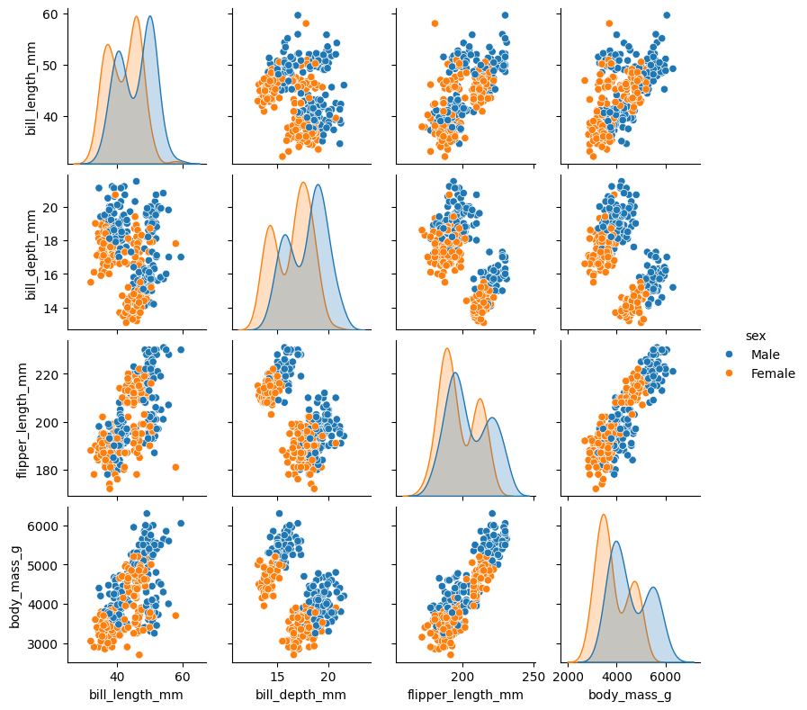
sns.pairplot(penguins, hue="island", height=2.0)
<seaborn.axisgrid.PairGrid at 0x217b1512830>

sns.pairplot(penguins[["species", "bill_length_mm", "bill_depth_mm", "flipper_length_mm", "body_mass_g"]], hue="species", height=2.0)
<seaborn.axisgrid.PairGrid at 0x217b6f97160>

Discussion
Take a look at the pairplot we created. Consider the following questions:
Is there any class that is easily distinguishable from the others?
Which combination of attributes shows the best separation for all 3 class labels at once?
For pairplot with
hue="sex", which combination of features distinguishes the two sexes best?What about the one with
hue="island"?
3.2 Handling Missing Values
Upon loading the Penguins dataset into a pandas DataFrame, the initial examination reveals the presence of NaN (Not a Number) values within several rows (highlighted in the Jupyter notebook). These placeholders explicitly indicate missing or unavailable data for certain measurements, such as bill length or the sex of particular penguins. Recognizing these missing values is an important first step, as they must be properly handled before performing any data analysis.
For numerical features such as bill length, bill depth, flipper length, and body mass, several strategies can be applied. A straightforward approach is to remove any rows with missing values, but this is often wasteful and reduces the sample size.
A more effective method is imputation: replacing missing numerical values with a suitable estimate. Common choices include the mean or median of the feature, depending on distribution.
Before applying imputation to handle missing numerical values, it is important to first identify where the NaN values occur in the dataset. We can run penguins_test.style.highlight_null(color = 'red'), where NaN values are hightlighed in the output.
penguins_test = pd.concat([penguins.head(5), penguins.tail(5)])
penguins_test.style.highlight_null(color = 'red')
| species | island | bill_length_mm | bill_depth_mm | flipper_length_mm | body_mass_g | sex | |
|---|---|---|---|---|---|---|---|
| 0 | Adelie | Torgersen | 39.100000 | 18.700000 | 181.000000 | 3750.000000 | Male |
| 1 | Adelie | Torgersen | 39.500000 | 17.400000 | 186.000000 | 3800.000000 | Female |
| 2 | Adelie | Torgersen | 40.300000 | 18.000000 | 195.000000 | 3250.000000 | Female |
| 3 | Adelie | Torgersen | nan | nan | nan | nan | nan |
| 4 | Adelie | Torgersen | 36.700000 | 19.300000 | 193.000000 | 3450.000000 | Female |
| 339 | Gentoo | Biscoe | nan | nan | nan | nan | nan |
| 340 | Gentoo | Biscoe | 46.800000 | 14.300000 | 215.000000 | 4850.000000 | Female |
| 341 | Gentoo | Biscoe | 50.400000 | 15.700000 | 222.000000 | 5750.000000 | Male |
| 342 | Gentoo | Biscoe | 45.200000 | 14.800000 | 212.000000 | 5200.000000 | Female |
| 343 | Gentoo | Biscoe | 49.900000 | 16.100000 | 213.000000 | 5400.000000 | Male |
3.2.1 Handling missing numerical data
Mean or Median Imputation
Here we calculate mean and median values for numerical features. To illustrate this process, we take body_mass_g feature as an example.
body_mass_g_mean = penguins_test.body_mass_g.mean()
body_mass_g_median = penguins_test.body_mass_g.median()
print(f" mean value of body_mass_g is {body_mass_g_mean}")
print(f"median value of body_mass_g is {body_mass_g_median}")
mean value of body_mass_g is 4431.25
median value of body_mass_g is 4325.0
Rather than directly replacing missing values, we concatenate new columns containing mean and median values for the body_mass_g feature to end of Penguins dataset, and than visualize distribution of this feature.
penguins_test['BMG_mean'] = penguins_test.body_mass_g.fillna(body_mass_g_mean)
penguins_test['BMG_median'] = penguins_test.body_mass_g.fillna(body_mass_g_median)
penguins_test.style.highlight_null(color = 'green')
| species | island | bill_length_mm | bill_depth_mm | flipper_length_mm | body_mass_g | sex | BMG_mean | BMG_median | |
|---|---|---|---|---|---|---|---|---|---|
| 0 | Adelie | Torgersen | 39.100000 | 18.700000 | 181.000000 | 3750.000000 | Male | 3750.000000 | 3750.000000 |
| 1 | Adelie | Torgersen | 39.500000 | 17.400000 | 186.000000 | 3800.000000 | Female | 3800.000000 | 3800.000000 |
| 2 | Adelie | Torgersen | 40.300000 | 18.000000 | 195.000000 | 3250.000000 | Female | 3250.000000 | 3250.000000 |
| 3 | Adelie | Torgersen | nan | nan | nan | nan | nan | 4431.250000 | 4325.000000 |
| 4 | Adelie | Torgersen | 36.700000 | 19.300000 | 193.000000 | 3450.000000 | Female | 3450.000000 | 3450.000000 |
| 339 | Gentoo | Biscoe | nan | nan | nan | nan | nan | 4431.250000 | 4325.000000 |
| 340 | Gentoo | Biscoe | 46.800000 | 14.300000 | 215.000000 | 4850.000000 | Female | 4850.000000 | 4850.000000 |
| 341 | Gentoo | Biscoe | 50.400000 | 15.700000 | 222.000000 | 5750.000000 | Male | 5750.000000 | 5750.000000 |
| 342 | Gentoo | Biscoe | 45.200000 | 14.800000 | 212.000000 | 5200.000000 | Female | 5200.000000 | 5200.000000 |
| 343 | Gentoo | Biscoe | 49.900000 | 16.100000 | 213.000000 | 5400.000000 | Male | 5400.000000 | 5400.000000 |
plt.figure(figsize=(8, 6))
penguins_test['body_mass_g'].plot(kind='kde', color='tab:green', label="body_mass_g")
penguins_test['BMG_mean'].plot(kind='kde', color='tab:orange', label="BMG_mean")
penguins_test['BMG_median'].plot(kind='kde', color='tab:blue', label="BMG_median")
plt.legend(loc='best')
plt.tight_layout()

End of Distribution Imputation
Sometimes one would want to replace missing data with values at the tail of distribution of variable.
Advantage is that it is quick and captures importance of missing values (if one suspects missing data is valuable).
EoD’s extreme value means the mean value with 3rd stander deviation,
(mean + (3*std)))
eod_value = penguins_test['body_mass_g'].mean() + 3 * penguins_test['body_mass_g'].std()
eod_value
7358.515606085554
penguins_test['BMG_EoD'] = penguins_test.body_mass_g.fillna(eod_value)
penguins_test.style.highlight_null(color = 'green')
| species | island | bill_length_mm | bill_depth_mm | flipper_length_mm | body_mass_g | sex | BMG_mean | BMG_median | BMG_EoD | |
|---|---|---|---|---|---|---|---|---|---|---|
| 0 | Adelie | Torgersen | 39.100000 | 18.700000 | 181.000000 | 3750.000000 | Male | 3750.000000 | 3750.000000 | 3750.000000 |
| 1 | Adelie | Torgersen | 39.500000 | 17.400000 | 186.000000 | 3800.000000 | Female | 3800.000000 | 3800.000000 | 3800.000000 |
| 2 | Adelie | Torgersen | 40.300000 | 18.000000 | 195.000000 | 3250.000000 | Female | 3250.000000 | 3250.000000 | 3250.000000 |
| 3 | Adelie | Torgersen | nan | nan | nan | nan | nan | 4431.250000 | 4325.000000 | 7358.515606 |
| 4 | Adelie | Torgersen | 36.700000 | 19.300000 | 193.000000 | 3450.000000 | Female | 3450.000000 | 3450.000000 | 3450.000000 |
| 339 | Gentoo | Biscoe | nan | nan | nan | nan | nan | 4431.250000 | 4325.000000 | 7358.515606 |
| 340 | Gentoo | Biscoe | 46.800000 | 14.300000 | 215.000000 | 4850.000000 | Female | 4850.000000 | 4850.000000 | 4850.000000 |
| 341 | Gentoo | Biscoe | 50.400000 | 15.700000 | 222.000000 | 5750.000000 | Male | 5750.000000 | 5750.000000 | 5750.000000 |
| 342 | Gentoo | Biscoe | 45.200000 | 14.800000 | 212.000000 | 5200.000000 | Female | 5200.000000 | 5200.000000 | 5200.000000 |
| 343 | Gentoo | Biscoe | 49.900000 | 16.100000 | 213.000000 | 5400.000000 | Male | 5400.000000 | 5400.000000 | 5400.000000 |
plt.figure(figsize=(8, 6))
penguins_test['body_mass_g'].plot(kind='kde', color='tab:green', label="body_mass_g")
penguins_test['BMG_mean'].plot(kind='kde', color='tab:orange', label="BMG_mean")
penguins_test['BMG_median'].plot(kind='kde', color='tab:blue', label="BMG_median")
penguins_test['BMG_EoD'].plot(kind='kde', color='tab:red', label="BMG_eod")
plt.legend(loc='best')
plt.tight_layout()

Warning
In certain scenarios, imputing missing data with values at end of distribution (EoD) of a variable can be a considered strategy. This approach offers advantage of computational speed and can theoretically capture significance of missing entries. Typically, EoD is calculated as an extreme value such as mean + 3*std, where mean and std of feature can be obtained using .describe() method.
However, as demonstrated here, this type of imputation often generates unrealistic values and distorts original distribution, particularly for features like body_mass_g. Consequently, it can lead to biased analyses and should be used with caution.
3.2.2 Handling missing categorical data
penguins_test = pd.concat([penguins.head(5), penguins.tail(5)])
penguins_test.style.highlight_null(color = 'red')
| species | island | bill_length_mm | bill_depth_mm | flipper_length_mm | body_mass_g | sex | |
|---|---|---|---|---|---|---|---|
| 0 | Adelie | Torgersen | 39.100000 | 18.700000 | 181.000000 | 3750.000000 | Male |
| 1 | Adelie | Torgersen | 39.500000 | 17.400000 | 186.000000 | 3800.000000 | Female |
| 2 | Adelie | Torgersen | 40.300000 | 18.000000 | 195.000000 | 3250.000000 | Female |
| 3 | Adelie | Torgersen | nan | nan | nan | nan | nan |
| 4 | Adelie | Torgersen | 36.700000 | 19.300000 | 193.000000 | 3450.000000 | Female |
| 339 | Gentoo | Biscoe | nan | nan | nan | nan | nan |
| 340 | Gentoo | Biscoe | 46.800000 | 14.300000 | 215.000000 | 4850.000000 | Female |
| 341 | Gentoo | Biscoe | 50.400000 | 15.700000 | 222.000000 | 5750.000000 | Male |
| 342 | Gentoo | Biscoe | 45.200000 | 14.800000 | 212.000000 | 5200.000000 | Female |
| 343 | Gentoo | Biscoe | 49.900000 | 16.100000 | 213.000000 | 5400.000000 | Male |
For categorical features such as sex, approach differs.
One simple method is to replace missing categories with most frequent value (
mode), which assumes missing value follows majority distribution.Alternatively, missing values can be treated as a separate category, labeled for example as “Unknown” or “Missing” which allows models to learn if missingness itself carries information.
Another option is to apply model-based imputation, where missing categorical values are predicted from other features using classification algorithms.
Imputation with most frequent value (mode)
plt.figure(figsize=(8, 6))
penguins_test.sex.value_counts().sort_values(ascending=False).plot.bar()
plt.xlabel('Sex')
plt.ylabel('Number of Penguins')
plt.tight_layout()
print("mode for sex feature: \n", penguins_test.sex.mode())
mode for sex feature:
0 Female
Name: sex, dtype: object
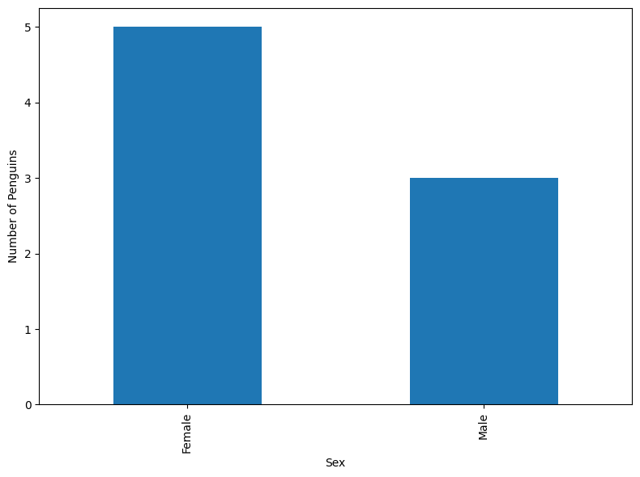
penguins_test['Sex_mode'] = penguins_test['sex'].fillna(penguins_test.sex.mode()[0])
penguins_test.style.highlight_null(color = 'green')
| species | island | bill_length_mm | bill_depth_mm | flipper_length_mm | body_mass_g | sex | Sex_mode | |
|---|---|---|---|---|---|---|---|---|
| 0 | Adelie | Torgersen | 39.100000 | 18.700000 | 181.000000 | 3750.000000 | Male | Male |
| 1 | Adelie | Torgersen | 39.500000 | 17.400000 | 186.000000 | 3800.000000 | Female | Female |
| 2 | Adelie | Torgersen | 40.300000 | 18.000000 | 195.000000 | 3250.000000 | Female | Female |
| 3 | Adelie | Torgersen | nan | nan | nan | nan | nan | Female |
| 4 | Adelie | Torgersen | 36.700000 | 19.300000 | 193.000000 | 3450.000000 | Female | Female |
| 339 | Gentoo | Biscoe | nan | nan | nan | nan | nan | Female |
| 340 | Gentoo | Biscoe | 46.800000 | 14.300000 | 215.000000 | 4850.000000 | Female | Female |
| 341 | Gentoo | Biscoe | 50.400000 | 15.700000 | 222.000000 | 5750.000000 | Male | Male |
| 342 | Gentoo | Biscoe | 45.200000 | 14.800000 | 212.000000 | 5200.000000 | Female | Female |
| 343 | Gentoo | Biscoe | 49.900000 | 16.100000 | 213.000000 | 5400.000000 | Male | Male |
Imputation with constant value
penguins_test['Sex_ConstValue'] = penguins_test['sex'].fillna("Missing")
penguins_test.style.highlight_null(color = 'green')
| species | island | bill_length_mm | bill_depth_mm | flipper_length_mm | body_mass_g | sex | Sex_mode | Sex_ConstValue | |
|---|---|---|---|---|---|---|---|---|---|
| 0 | Adelie | Torgersen | 39.100000 | 18.700000 | 181.000000 | 3750.000000 | Male | Male | Male |
| 1 | Adelie | Torgersen | 39.500000 | 17.400000 | 186.000000 | 3800.000000 | Female | Female | Female |
| 2 | Adelie | Torgersen | 40.300000 | 18.000000 | 195.000000 | 3250.000000 | Female | Female | Female |
| 3 | Adelie | Torgersen | nan | nan | nan | nan | nan | Female | Missing |
| 4 | Adelie | Torgersen | 36.700000 | 19.300000 | 193.000000 | 3450.000000 | Female | Female | Female |
| 339 | Gentoo | Biscoe | nan | nan | nan | nan | nan | Female | Missing |
| 340 | Gentoo | Biscoe | 46.800000 | 14.300000 | 215.000000 | 4850.000000 | Female | Female | Female |
| 341 | Gentoo | Biscoe | 50.400000 | 15.700000 | 222.000000 | 5750.000000 | Male | Male | Male |
| 342 | Gentoo | Biscoe | 45.200000 | 14.800000 | 212.000000 | 5200.000000 | Female | Female | Female |
| 343 | Gentoo | Biscoe | 49.900000 | 16.100000 | 213.000000 | 5400.000000 | Male | Male | Male |
plt.figure(figsize=(8, 6))
penguins_test["Sex_ConstValue"].value_counts().sort_values(ascending=False).plot.bar()
plt.xlabel('Sex')
plt.ylabel('Number of Penguins')
plt.tight_layout()

Note
For the other dataset, strategy for handling missing values is not one-size-fits-all; it depends heavily on whether missing data is numerical or categorical and underlying mechanism causing data to be missing. Ignoring these missing entries, such as by simply dropping affected rows, may introduce significant bias, reduce statistical power, and ultimately lead to inaccurate or misleading conclusions.
After any imputation, it is essential to perform sanity checks to ensure the imputed values are plausible and to document the methodology transparently. Properly handling missing data in this way transforms an incomplete dataset into a robust and reliable foundation for generating accurate insights and building powerful predictive models.
3.2.3 Remove missing values
For all ML tasks we will perform in the following episodes, we adopt a straightforward approach of removing any rows that contain missing values (penguins_test.dropna()). This ensures that the dataset is complete and avoids potential errors or biases caused by NaN entries. Although more sophisticated imputation methods exist, dropping rows is a simple and effective strategy when the proportion of missing data is relatively small.
penguins_test = pd.concat([penguins.head(5), penguins.tail(5)])
penguins_test.style.highlight_null(color = 'red')
| species | island | bill_length_mm | bill_depth_mm | flipper_length_mm | body_mass_g | sex | |
|---|---|---|---|---|---|---|---|
| 0 | Adelie | Torgersen | 39.100000 | 18.700000 | 181.000000 | 3750.000000 | Male |
| 1 | Adelie | Torgersen | 39.500000 | 17.400000 | 186.000000 | 3800.000000 | Female |
| 2 | Adelie | Torgersen | 40.300000 | 18.000000 | 195.000000 | 3250.000000 | Female |
| 3 | Adelie | Torgersen | nan | nan | nan | nan | nan |
| 4 | Adelie | Torgersen | 36.700000 | 19.300000 | 193.000000 | 3450.000000 | Female |
| 339 | Gentoo | Biscoe | nan | nan | nan | nan | nan |
| 340 | Gentoo | Biscoe | 46.800000 | 14.300000 | 215.000000 | 4850.000000 | Female |
| 341 | Gentoo | Biscoe | 50.400000 | 15.700000 | 222.000000 | 5750.000000 | Male |
| 342 | Gentoo | Biscoe | 45.200000 | 14.800000 | 212.000000 | 5200.000000 | Female |
| 343 | Gentoo | Biscoe | 49.900000 | 16.100000 | 213.000000 | 5400.000000 | Male |
penguins_test_remove = penguins_test.dropna() # axis=1
penguins_test_remove.style.highlight_null(color = 'red')
| species | island | bill_length_mm | bill_depth_mm | flipper_length_mm | body_mass_g | sex | |
|---|---|---|---|---|---|---|---|
| 0 | Adelie | Torgersen | 39.100000 | 18.700000 | 181.000000 | 3750.000000 | Male |
| 1 | Adelie | Torgersen | 39.500000 | 17.400000 | 186.000000 | 3800.000000 | Female |
| 2 | Adelie | Torgersen | 40.300000 | 18.000000 | 195.000000 | 3250.000000 | Female |
| 4 | Adelie | Torgersen | 36.700000 | 19.300000 | 193.000000 | 3450.000000 | Female |
| 340 | Gentoo | Biscoe | 46.800000 | 14.300000 | 215.000000 | 4850.000000 | Female |
| 341 | Gentoo | Biscoe | 50.400000 | 15.700000 | 222.000000 | 5750.000000 | Male |
| 342 | Gentoo | Biscoe | 45.200000 | 14.800000 | 212.000000 | 5200.000000 | Female |
| 343 | Gentoo | Biscoe | 49.900000 | 16.100000 | 213.000000 | 5400.000000 | Male |
3.3. Handling Outliers
Outliers are values that are too far from rest of observations in columns. For instance, if body mass of most of penguins in dataset varies between 3000-6000 g, an observation of 7500 g will be considered as an outlier since such an observation occurs rarely.
3.3.1 Creating outliers
We have calculated EoD value of body_mass_g feature and then check if this value is outlier for this feature.
# Here we use the EoD value as an example to create two outlier points
penguins_test_BMG_outlier = penguins[["species", "bill_length_mm", "body_mass_g"]]
eod_value = penguins_test['body_mass_g'].mean() + 3 * penguins_test['body_mass_g'].std()
print(f"EoD value = {eod_value}")
penguins_test_BMG_outlier.loc[:, "body_mass_g"] = penguins_test_BMG_outlier["body_mass_g"].fillna(eod_value)
penguins_test_BMG_outlier
EoD value = 7358.515606085554
| species | bill_length_mm | body_mass_g | |
|---|---|---|---|
| 0 | Adelie | 39.1 | 3750.000000 |
| 1 | Adelie | 39.5 | 3800.000000 |
| 2 | Adelie | 40.3 | 3250.000000 |
| 3 | Adelie | NaN | 7358.515606 |
| 4 | Adelie | 36.7 | 3450.000000 |
| ... | ... | ... | ... |
| 339 | Gentoo | NaN | 7358.515606 |
| 340 | Gentoo | 46.8 | 4850.000000 |
| 341 | Gentoo | 50.4 | 5750.000000 |
| 342 | Gentoo | 45.2 | 5200.000000 |
| 343 | Gentoo | 49.9 | 5400.000000 |
344 rows × 3 columns
plt.figure(figsize=(8,6))
sns.swarmplot(y=penguins_test_BMG_outlier["species"], x=penguins_test_BMG_outlier["body_mass_g"],
color="lightgreen", marker="o", size=4)
sns.boxplot(y=penguins_test_BMG_outlier["species"], x=penguins_test_BMG_outlier["body_mass_g"],
palette="coolwarm", notch=True, linewidth=2, width=0.5,
hue=penguins_test_BMG_outlier.species, legend=False)
plt.xlabel("Body mass (g)", fontsize=14)
plt.ylabel("Species", fontsize=14)
plt.tick_params(axis='x', labelsize=12)
plt.tick_params(axis='y', labelsize=12)
plt.tight_layout()

There are several approaches to identify outliers, and two of most commonly used methods are Interquartile Range (IQR) method and Mean-Standard Deviation method.
3.3.2 The Inter quartile range (IQR) method
IQR measures spread of middle 50% of data and is calculated by subtracting 1st quartile (25th percentile, Q1) from 3rd quartile (75th percentile, Q3).
Once IQR is obtained, we can determine boundaries for detecting outliers.
Lower limit is defined as Q1 minus 1.5 times IQR.
Upper limit is defined as Q3 plus 1.5 times IQR.
penguins_test_BMG_outlier.describe()
| bill_length_mm | body_mass_g | |
|---|---|---|
| count | 342.000000 | 344.000000 |
| mean | 43.921930 | 4220.107649 |
| std | 5.459584 | 834.954489 |
| min | 32.100000 | 2700.000000 |
| 25% | 39.225000 | 3550.000000 |
| 50% | 44.450000 | 4050.000000 |
| 75% | 48.500000 | 4781.250000 |
| max | 59.600000 | 7358.515606 |
print(f"25% quantile = {penguins_test_BMG_outlier['body_mass_g'].quantile(0.25)}")
print(f"75% quantile = {penguins_test_BMG_outlier['body_mass_g'].quantile(0.75)}\n")
IQR = penguins_test_BMG_outlier["body_mass_g"].quantile(0.75) - penguins_test_BMG_outlier["body_mass_g"].quantile(0.25)
lower_bmg_limit = penguins_test_BMG_outlier["body_mass_g"].quantile(0.25) - (1.5 * IQR)
upper_bmg_limit = penguins_test_BMG_outlier["body_mass_g"].quantile(0.75) + (1.5 * IQR)
print(f"lower limt of IQR = {lower_bmg_limit} and upper limit of IQR = {upper_bmg_limit}")
25% quantile = 3550.0
75% quantile = 4781.25
lower limt of IQR = 1703.125 and upper limit of IQR = 6628.125
Any data points that fall below lower limit or above upper limit are considered outliers, and these points are subsequently removed from dataset.
# check data points larger than the upper limit of the IQR range
penguins_test_BMG_outlier[penguins_test_BMG_outlier["body_mass_g"] > upper_bmg_limit]
| species | bill_length_mm | body_mass_g | |
|---|---|---|---|
| 3 | Adelie | NaN | 7358.515606 |
| 339 | Gentoo | NaN | 7358.515606 |
# check data points smaller than the lower limit of the IQR range
penguins_test_BMG_outlier[penguins_test_BMG_outlier["body_mass_g"] < lower_bmg_limit]
| species | bill_length_mm | body_mass_g |
|---|
# remove the outliers
penguins_test_BMG_outlier_remove_IQR = penguins_test_BMG_outlier[penguins_test_BMG_outlier["body_mass_g"] < upper_bmg_limit]
penguins_test_BMG_outlier_remove_IQR
| species | bill_length_mm | body_mass_g | |
|---|---|---|---|
| 0 | Adelie | 39.1 | 3750.0 |
| 1 | Adelie | 39.5 | 3800.0 |
| 2 | Adelie | 40.3 | 3250.0 |
| 4 | Adelie | 36.7 | 3450.0 |
| 5 | Adelie | 39.3 | 3650.0 |
| ... | ... | ... | ... |
| 338 | Gentoo | 47.2 | 4925.0 |
| 340 | Gentoo | 46.8 | 4850.0 |
| 341 | Gentoo | 50.4 | 5750.0 |
| 342 | Gentoo | 45.2 | 5200.0 |
| 343 | Gentoo | 49.9 | 5400.0 |
342 rows × 3 columns
plt.figure(figsize=(8, 6))
sns.swarmplot(y=penguins_test_BMG_outlier_remove_IQR["species"], x=penguins_test_BMG_outlier_remove_IQR["body_mass_g"], color="lightgreen", marker="o", size=4)
sns.boxplot(y=penguins_test_BMG_outlier_remove_IQR["species"], x=penguins_test_BMG_outlier_remove_IQR["body_mass_g"],
palette="coolwarm", notch=True, linewidth=2, width=0.5,
hue=penguins_test_BMG_outlier_remove_IQR.species, legend=False)
plt.tight_layout()

3.3.3 The mean-standard deviation method
Instead of using IQR method, upper and lower thresholds for detecting outliers can also be calculated with mean-std deviation approach.
Here we compute
meanandstdofbody_mass_gfeature.Calculate upper and lower limits for outlier detection using formulas.
lower limit = mean - 3.0 \times stdupper limit = mean + 3.0 \times std
Identify outliers and replace them with either
meanormedianvalues ofbody_mass_gfeature.
penguins_test_BMG_outlier
| species | bill_length_mm | body_mass_g | |
|---|---|---|---|
| 0 | Adelie | 39.1 | 3750.000000 |
| 1 | Adelie | 39.5 | 3800.000000 |
| 2 | Adelie | 40.3 | 3250.000000 |
| 3 | Adelie | NaN | 7358.515606 |
| 4 | Adelie | 36.7 | 3450.000000 |
| ... | ... | ... | ... |
| 339 | Gentoo | NaN | 7358.515606 |
| 340 | Gentoo | 46.8 | 4850.000000 |
| 341 | Gentoo | 50.4 | 5750.000000 |
| 342 | Gentoo | 45.2 | 5200.000000 |
| 343 | Gentoo | 49.9 | 5400.000000 |
344 rows × 3 columns
# calculate mean and std values
mean = penguins_test_BMG_outlier["body_mass_g"].mean()
std = penguins_test_BMG_outlier["body_mass_g"].std()
print(f"mean = {mean}, std = {std}", '\n')
lower_bmg_limit = mean - (3.0 * std)
upper_bmg_limit = mean + (3.0 * std)
print(f"lower limt of mean-std = {lower_bmg_limit} and upper limit of mean-std = {upper_bmg_limit}")
mean = 4220.10764887259, std = 834.9544887876802
lower limt of mean-std = 1715.2441825095493 and upper limit of mean-std = 6724.971115235631
# check data points larger than the upper limit of the mean-std range
penguins_test_BMG_outlier[penguins_test_BMG_outlier["body_mass_g"] > upper_bmg_limit]
| species | bill_length_mm | body_mass_g | |
|---|---|---|---|
| 3 | Adelie | NaN | 7358.515606 |
| 339 | Gentoo | NaN | 7358.515606 |
# check data points smaller than the lower limit of the mean-std range
penguins_test_BMG_outlier[penguins_test_BMG_outlier["body_mass_g"] < lower_bmg_limit]
| species | bill_length_mm | body_mass_g |
|---|
# we can remove these outliers, here we imputate these outliers with mean value of "body_mass_g" feature
penguins_test_BMG_outlier.loc[penguins_test_BMG_outlier["body_mass_g"] < lower_bmg_limit, "body_mass_g"] = mean
penguins_test_BMG_outlier.loc[penguins_test_BMG_outlier["body_mass_g"] > upper_bmg_limit, "body_mass_g"] = mean
penguins_test_BMG_outlier
| species | bill_length_mm | body_mass_g | |
|---|---|---|---|
| 0 | Adelie | 39.1 | 3750.000000 |
| 1 | Adelie | 39.5 | 3800.000000 |
| 2 | Adelie | 40.3 | 3250.000000 |
| 3 | Adelie | NaN | 4220.107649 |
| 4 | Adelie | 36.7 | 3450.000000 |
| ... | ... | ... | ... |
| 339 | Gentoo | NaN | 4220.107649 |
| 340 | Gentoo | 46.8 | 4850.000000 |
| 341 | Gentoo | 50.4 | 5750.000000 |
| 342 | Gentoo | 45.2 | 5200.000000 |
| 343 | Gentoo | 49.9 | 5400.000000 |
344 rows × 3 columns
There are four main techniques for handling outliers in a dataset.
Remove outliers entirely.
This approach simply deletes rows containing outlier values, which can be effective if outliers are errors or rare events that are not relevant to analysis.
Treat outliers as missing values.
Outliers can be replaced with
NaNand then handled using imputation methods described in previous sections, such as replacing them withmean,median, ormode.
Apply discretization or binning.
By grouping numerical values into bins, outliers are included in tail bins along with other extreme values, which reduces their impact while preserving overall structure of data.
Cap or censor outliers.
Extreme values can be limited to a maximum or minimum threshold, often derived from statistical techniques such as IQR or standard deviation limits. This approach reduces influence of outliers without completely removing them from dataset.
3.4 Encoding Categorical Variables
In previous sections, we adopted a straightforward approach to handling missing values by simply removing any rows that contained NaN values, whether they were in numerical or categorical features. While this step gives us a cleaner dataset, it is not sufficient on its own to proceed with ML tasks.
The reason is that most ML algorithms are designed to work only with numerical data. They cannot directly process textual or symbolic categories such as species, island, or sex in the Penguins dataset. To make these categorical variables usable in modeling, we need to encode categorical variables into a numerical format while preserving their information.
There are two widely used encoding techniques: One-hot encoding (OHE) and Label Encoding.
penguins_sex = penguins[["species", "island", "sex"]].head(10)
penguins_sex
| species | island | sex | |
|---|---|---|---|
| 0 | Adelie | Torgersen | Male |
| 1 | Adelie | Torgersen | Female |
| 2 | Adelie | Torgersen | Female |
| 3 | Adelie | Torgersen | NaN |
| 4 | Adelie | Torgersen | Female |
| 5 | Adelie | Torgersen | Male |
| 6 | Adelie | Torgersen | Female |
| 7 | Adelie | Torgersen | Male |
| 8 | Adelie | Torgersen | NaN |
| 9 | Adelie | Torgersen | NaN |
3.4.1 One hot encoding (OHE)
OHE method creates a new binary column for each category in a feature. For example, species feature with values {Female, Male, and NaN} would be transformed into three new columns, each indicating presence (1) or absence (0) of that category for a given row.
from sklearn.preprocessing import OneHotEncoder
encoder = OneHotEncoder(sparse_output=False) # `sparse_output=False` to get a dense array
encoded = encoder.fit_transform(penguins_sex[['sex']])
encoded = pd.DataFrame(encoded, columns=["Female", "Male", "NaN"])
penguins_sex_onehotencoding = pd.concat([penguins_sex, encoded], axis=1)
penguins_sex_onehotencoding
| species | island | sex | Female | Male | NaN | |
|---|---|---|---|---|---|---|
| 0 | Adelie | Torgersen | Male | 0.0 | 1.0 | 0.0 |
| 1 | Adelie | Torgersen | Female | 1.0 | 0.0 | 0.0 |
| 2 | Adelie | Torgersen | Female | 1.0 | 0.0 | 0.0 |
| 3 | Adelie | Torgersen | NaN | 0.0 | 0.0 | 1.0 |
| 4 | Adelie | Torgersen | Female | 1.0 | 0.0 | 0.0 |
| 5 | Adelie | Torgersen | Male | 0.0 | 1.0 | 0.0 |
| 6 | Adelie | Torgersen | Female | 1.0 | 0.0 | 0.0 |
| 7 | Adelie | Torgersen | Male | 0.0 | 1.0 | 0.0 |
| 8 | Adelie | Torgersen | NaN | 0.0 | 0.0 | 1.0 |
| 9 | Adelie | Torgersen | NaN | 0.0 | 0.0 | 1.0 |
Warning
OHE works well when number of categories is small and when categories are unordered. However, it can lead to very large datasets if a feature contains many unique categories (high cardinality), such as a ‘city’ feature in Sweden. Sweden has nearly 300 municipalities and many more towns and localities. If each unique city is turned into its own column, dataset could quickly expand to hundreds of columns, most of which will contain zeros for any given row. This high cardinality increases memory usage, slows down training, and may reduce model’s efficiency.
3.4.2 Label encoding
Label encoding transforms a categorical feature into a single numerical column by assigning a unique integer to each category in a feature. For example, sex feature with values {Female, Male, NaN} could be encoded as Female = 0, Male = 1, and missing values handled separately or imputed beforehand (in our case, NaN is encoded as NaN = 2).
from sklearn.preprocessing import LabelEncoder
encoder = LabelEncoder()
encoded = encoder.fit_transform(penguins_sex['sex'])
encoded = pd.DataFrame(encoded, columns=["sex_LE"])
penguins_sex_labelencoding = pd.concat([penguins_sex, encoded], axis=1)
penguins_sex_labelencoding
| species | island | sex | sex_LE | |
|---|---|---|---|---|
| 0 | Adelie | Torgersen | Male | 1 |
| 1 | Adelie | Torgersen | Female | 0 |
| 2 | Adelie | Torgersen | Female | 0 |
| 3 | Adelie | Torgersen | NaN | 2 |
| 4 | Adelie | Torgersen | Female | 0 |
| 5 | Adelie | Torgersen | Male | 1 |
| 6 | Adelie | Torgersen | Female | 0 |
| 7 | Adelie | Torgersen | Male | 1 |
| 8 | Adelie | Torgersen | NaN | 2 |
| 9 | Adelie | Torgersen | NaN | 2 |
Unlike OHE, which creates multiple columns, label encoding produces only one column, making it more memory-efficient. However, it introduces an artificial ordinal relationship between categories (e.g., implying Dream > Biscoe), which may not be meaningful and can affect algorithms that assume numeric order matters, such as linear regression or distance-based methods.
3.4.3 The get_dummies() function in Pandas
In addition to OHE and LE methods, we can also use get_dummies() in Pandas to handle categorical variables by converting them into a one-hot encoded (dummy variable) format.
Note
This function ignores NaN values by default (it simply leaves them out).
dummy_encoded = pd.get_dummies(penguins_sex['sex']).astype(np.int8)
penguins_sex_dummyencoding = pd.concat([penguins_sex, dummy_encoded], axis=1)
penguins_sex_dummyencoding
| species | island | sex | Female | Male | |
|---|---|---|---|---|---|
| 0 | Adelie | Torgersen | Male | 0 | 1 |
| 1 | Adelie | Torgersen | Female | 1 | 0 |
| 2 | Adelie | Torgersen | Female | 1 | 0 |
| 3 | Adelie | Torgersen | NaN | 0 | 0 |
| 4 | Adelie | Torgersen | Female | 1 | 0 |
| 5 | Adelie | Torgersen | Male | 0 | 1 |
| 6 | Adelie | Torgersen | Female | 1 | 0 |
| 7 | Adelie | Torgersen | Male | 0 | 1 |
| 8 | Adelie | Torgersen | NaN | 0 | 0 |
| 9 | Adelie | Torgersen | NaN | 0 | 0 |
More encoding strategies
Beyond these two common methods, there are several other encoding strategies, especially useful for more complex datasets:
Ordinal Encoding: A variation of label encoding designed specifically for variables that have a natural and meaningful order (e.g., Small = 0, Medium = 1, Large = 2).
Binary Encoding: Converts categories into binary code, achieving a good compromise between one-hot and label encoding for high-cardinality data.
Target Encoding (Mean Encoding): Replaces each category with the average value of the target variable for that category. It is powerful but prone to overfitting if not carefully implemented.
Frequency Encoding: Replaces categories with their frequency of occurrence in the dataset. This can be useful for dealing with high-cardinality features.
The choice of encoding method is a consequential modeling decision. It should be guided by the type of categorical data (nominal vs. ordinal), the number of unique categories, the type of ML algorithm being used. A proper encoding ensures that categorical features are accurately represented in numerical form, allowing algorithms to learn patterns effectively without introducing bias or noise.
4. Feature Engineering
Feature engineering is a part of the broader data processing pipeline in ML workflows. It involves using domain knowledge to select, modify, or create new features — variables or attributes — from existing data to help algorithms better understand patterns and relationships.
Feature engineering is crucial because the quality of features directly impacts a model’s predictive power. Well-crafted features can simplify complex patterns, reduce overfitting, and improve model interpretability, leading to better generalization and performance on unseen data. By tailoring features to the problem at hand, feature engineering bridges the gap between raw data and actionable insights, often making the difference between a mediocre and a high-performing model.
Feature engineering is closely related to data preprocessing, but they serve different purposes.
Data processing (or data preprocessing) is about cleaning and preparing data — handling missing values, removing duplicates, correcting data types, and ensuring consistency. This step makes the data usable.
Feature engineering, on the other hand, comes after basic processing and focuses on improving the predictive power of dataset.
In essence, data preprocessing ensures data quality, while feature engineering enhances data value for ML models.
Both are essential steps in building effective and accurate predictive systems.
Classification
Objectives
Describe basic concepts of classification tasks, including inputs (features), outputs (labels), and common algorithms.
Perform classification tasks using representative algorithms (e.g., k-Nearest Neighbors, Logistic Regression, Support Vector Machine, Decision Tree, and Multi-Layer Perceptron, etc.).
Evaluate model performance with metrics such as accuracy and confusion matrices, decision boundaries, etc.
Instructor note
80 min teaching
30 min exercises/discussion
1. Classification
1.1 What is Classification
Classification is a supervised ML task in which a model predicts discrete class labels based on input features. It involves training the model on labeled data so that it can assign new and unseen data to predefined categories or classes by learning patterns from the training dataset.
In binary classification, the model predicts one of two classes, such as spam or not spam for emails.
Multiclass classification extends this to multiple categories, like classifying images as cats, dogs, or birds.
Common algorithms for classification tasks include k-Nearest Neighbors, Logistic Regression, Naive Bayes, Support Vector Machine, Decision Trees, Random Forests, Gradient Boosting, and Neural Networks.
import numpy as np
import pandas as pd
import seaborn as sns
import matplotlib.pyplot as plt
1.2 Palmer Penguins dataset
# load dataset
penguins = sns.load_dataset('penguins')
# remove missing values and outliers
penguins_classification = penguins.dropna()
# check duplicate values
penguins_classification.duplicated().value_counts()
# features
X = penguins_classification[['bill_length_mm', 'bill_depth_mm', 'flipper_length_mm', 'body_mass_g']].copy()
# label
y = penguins_classification[['species']].copy()
from sklearn.preprocessing import LabelEncoder
encoder = LabelEncoder()
# encode `species` column with 0=Adelie, 1=Chinstrap, and 2=Gentoo
y['species'] = encoder.fit_transform(y['species'])
# splitting into training and testing sets
from sklearn.model_selection import train_test_split
# "stratify=y" ensures class distribution is preserved during train/test split
X_train, X_test, y_train, y_test = train_test_split(X, y, test_size=0.2, random_state=123)
print(f"The training set contains {len(X_train)} examples, and the testing set contains {len(X_test)} examples.")
# feature scaling
from sklearn.preprocessing import StandardScaler
scaler = StandardScaler()
X_train_scaled = scaler.fit_transform(X_train)
X_test_scaled = scaler.transform(X_test)
The training set contains 266 examples, and the testing set contains 67 examples.
1.3 Training workflow
Note
Workflow for training and evaluating model performance generally follows these steps:
choose a model class and import it,
from sklearn.neighbors import XXXset model hyperparameters by instantiating class with desired values,
xxx_model = XXX(<... hyperparameters ...>)train model on training data using
.fit()method,xxx_model.fit(feature_train, label_train)make predictions on testing data using
.predict()method,xxx_y_pred = xxx_model.predict(feature_test)evaluate model performance using appropriate metrics, such as
xxx_score = accuracy_score(feature_test, feature_pred_xxx)for classification tasksvisualize results, i.e., by plotting a confusion matrix or other diagnostic charts to better understand model performance.
2. kNN
2.1 What is kNN
One intuitive and widely used method for classification is kNN algorithm
It is a non-parametric, instance-based approach that predicts a sample’s label by considering majority class of its k closest neighbors in training set.
Unlike many other algorithms, kNN does not require a traditional training phase; instead, it stores entire dataset and performs necessary computations at prediction step.
This makes it a lazy learner – simple to implement but potentially expensive during inference, especially with large datasets.
Below is an example illustrating how kNN determines class of a new query point
Given a query point, kNN first calculates distance between this point and all points in training set.
It then identifies k closest points, and class that appears most frequently among these neighbors is assigned as predicted label for query point.
Choice of k plays a crucial role in performance:
a small k can make the model overly sensitive to noise
a large k may oversmooth decision boundaries and obscure important local patterns.
from IPython.display import display, Image
display(Image("../images/classification/knn-example.png", width=1240))

2.2 Training a kNN model
from sklearn.neighbors import KNeighborsClassifier
knn_model = KNeighborsClassifier(n_neighbors=3)
knn_model.fit(X_train_scaled, y_train.values.ravel())
KNeighborsClassifier(n_neighbors=3)In a Jupyter environment, please rerun this cell to show the HTML representation or trust the notebook.
On GitHub, the HTML representation is unable to render, please try loading this page with nbviewer.org.
Parameters
| n_neighbors | 3 | |
| weights | 'uniform' | |
| algorithm | 'auto' | |
| leaf_size | 30 | |
| p | 2 | |
| metric | 'minkowski' | |
| metric_params | None | |
| n_jobs | None |
2.3 Evaluating model’s performance
After fitting model to training dataset, we use trained kNN model to predict species on testing set and evaluate its performance.
For classification tasks, metrics such as accuracy, precision, recall, and F1-score provide a comprehensive assessment of model performance.
Accuracy measures proportion of correctly classified instances across all species.
It provides an overall sense of how often the model is correct but can be misleading when the dataset is imbalanced.
Precision quantifies proportion of correct positive predictions for each species.
Recall measures proportion of actual positives that are correctly identified.
F1-score is harmonic mean of precision and recall, offering a balanced metric for each class.
It is particularly useful when dealing with imbalanced class distributions, as it accounts for both false positives and false negatives.
Correlations between evaluation matrics
Correlations between evaluation matrics
In binary classification tasks like email spam detection, model predicts whether an email is spam (positive) or not spam (negative).
Outcomes of these predictions can be described using four key concepts.
True Positive (TP): email is actually spam, and model correctly predicts it as spam.
True Negative (TN): email is not spam, and model correctly predicts it as not spam.
False Positive (FP): email is not spam, but model incorrectly predicts it as spam.
False Negative (FN): email is spam, but model incorrectly predicts it as not spam.
These four outcomes form basis of performance metrics such as accuracy, precision, recall, and F1-score, which help evaluate how well model distinguishes between species.
$$Accuracy=\frac{TP+TN}{TP+TN+FP+FN}$$
$$Precision=\frac{TP}{TP+FP}$$
$$Recall=\frac{TP}{TP+FN}$$
$$F1=2\cdot\frac{Precision \cdot Recall}{Precision + Recall}$$
# predict on testing data
knn_y_pred = knn_model.predict(X_test_scaled)
# evaluate model performance
from sklearn.metrics import classification_report, accuracy_score
knn_score = accuracy_score(y_test, knn_y_pred)
print("Accuracy for k-Nearest Neighbors:", knn_score)
print("\nClassification Report:\n", classification_report(y_test, knn_y_pred))
Accuracy for k-Nearest Neighbors: 0.9701492537313433
Classification Report:
precision recall f1-score support
0 0.93 1.00 0.97 28
1 1.00 0.90 0.95 20
2 1.00 1.00 1.00 19
accuracy 0.97 67
macro avg 0.98 0.97 0.97 67
weighted avg 0.97 0.97 0.97 67
2.3.1 AUC-ROC
AUC–ROC is a widely used metric for evaluating performance of classification models, especially when models output probabilities or confidence scores rather than only class labels.
It combines ROC curve (Receiver Operating Characteristic) and AUC (Area Under Curve) into a single framework that measures how well a model can distinguish between classes across all possible decision thresholds.
ROC curve illustrates trade-off between True Positive Rate (TPR), also known as recall or sensitivity, and False Positive Rate (FPR) as classification threshold changes.
$TPR = \frac{TP}{TP+FN}$
$FPR = \frac{FP}{FP+TN}$
Each point on curve corresponds to a different threshold used to convert predicted scores into class labels.
A curve that bows toward top-left corner indicates strong discriminative ability, while a curve close to diagonal represents performance similar to random guessing.
AUC summarizes ROC curve into a single scalar value, ranging from 0 to 1.
AUC = 1.0 → perfect classifier that completely separates positive and negative samples
AUC = 0.5 → random guessing, or no discriminative power
AUC < 0.5 → worse than random
AUC can be interpreted as probability that model ranks a randomly chosen positive example higher than a randomly chosen negative one.
AUC–ROC is particularly useful because it is threshold-independent, relatively robust to class imbalance, measuring ranking quality, not just final labels, making it more informative than accuracy in many real-world settings.
In multiclass classification problems, AUC–ROC is commonly computed using a one-vs-rest strategy and then averaged across classes.
AUC–ROC provides a comprehensive view of a classifier’s ability to separate classes and is an important tool for model evaluation and comparison in ML and DL.
from sklearn.preprocessing import label_binarize
from sklearn.metrics import roc_curve, auc
def plot_AUC_ROC(model):
# ROC requires scores or probabilities, not hard labels
y_score = model.predict_proba(X_test_scaled)
# binarize labels (required for multiclass ROC)
classes = np.unique(y_train)
y_test_bin = label_binarize(y_test, classes=classes)
# compute ROC curve and AUC for each class
fpr = {}
tpr = {}
roc_auc = {}
for i in range(len(classes)):
fpr[i], tpr[i], _ = roc_curve(y_test_bin[:, i], y_score[:, i])
roc_auc[i] = auc(fpr[i], tpr[i])
# plot ROC curves
plt.figure(figsize=(6, 4.5))
class_names = encoder.classes_
for i, class_name in enumerate(class_names):
plt.plot(fpr[i], tpr[i], label=f'{class_name} (AUC = {roc_auc[i]:.2f})')
# random guess line
plt.plot([0, 1], [0, 1], 'k--')
plt.xlabel('False Positive Rate')
plt.ylabel('True Positive Rate')
plt.title('Multiclass ROC Curve')
plt.legend(loc='lower right')
plt.grid(True)
plt.tight_layout()
plt.show()
plot_AUC_ROC(knn_model)
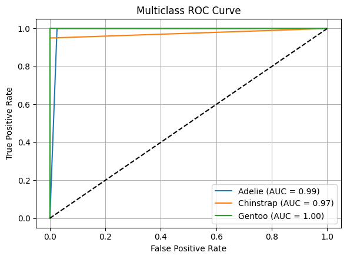
2.3.2 Confusion matrix
In classification tasks, a confusion matrix is a powerful tool for evaluating model performance by comparing predicted labels with true labels.
For a multiclass problem, confusion matrix is an N x N matrix, where $N$ represents number of target classes (here, N=3 for three penguins species).
Each cell (i, j) shows number of instances where true class was i and model predicted class j.
Diagonal elements correspond to correct predictions, while off-diagonal elements indicate misclassifications.
This visualization provides an intuitive overview of how often the model predicts correctly and where it tends to make errors.
from sklearn.metrics import confusion_matrix
def plot_confusion_matrix(conf_matrix, title, fig_name=None):
plt.figure(figsize=(6, 5))
sns.heatmap(conf_matrix, annot=True, fmt='d', cmap='YlGn',
xticklabels=["Adelie", "Chinstrap", "Gentoo"],
yticklabels=['Adelie', 'Chinstrap', 'Gentoo'], cbar=True)
plt.xlabel("Predicted Label")
plt.ylabel("True Label")
plt.title(title)
plt.tight_layout()
if fig_name:
plt.savefig(fig_name)
# compute and plot confusion matrix
knn_cm = confusion_matrix(y_test, knn_y_pred)
plot_confusion_matrix(knn_cm, "Confusion Matrix using kNN algorithm", "knn-confusioin-matrix-penguins.png")
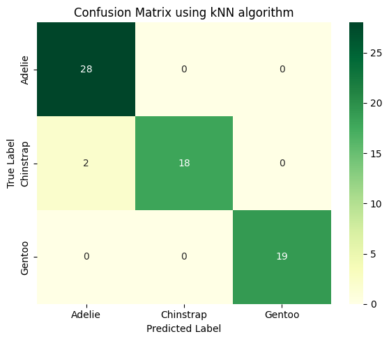
1st row: there are 28 Adelie penguins in test data, and all these penguins are identified as Adelie (valid).
2nd row: there are 20 Chinstrap pengunis in test data, with 2 identified as Adelie (invalid), and 18 identified as Chinstrap (valid).
3rd row: there are 19 Gentoo penguins in test data, and all these penguins are identified as Gentoo (valid).
Warning
Choice of k can greatly affect accuracy of kNN.
Always try multiple
kvalues and compare their performanceFor Penguins dataset, test different k values to find optimal
kthat gives best classification results (accuracy score)
2.3.3 Decision boundaries
Decision boundaries in classification tasks describe regions of feature space where a model assigns different class labels.
In other words, a decision boundary is the surface (a line in 2D, a plane in 3D, or a hypersurface in higher dimensions) that separates data points belonging to different predicted classes.
Any point on one side of boundary is classified as one class, while points on other side are classified as another.
From a geometric perspective, decision boundaries reflect how a classifier partitions input space based on learned patterns.
Linear classifiers such as logistic regression or linear SVM produce straight-line (or hyperplane) boundaries, while nonlinear models, including kNN, decision trees, and NNs, can form complex, curved, or irregular boundaries.
Shape of boundary depends on model type, its parameters, choice of features, and distribution of data.
Understanding decision boundaries is important because they provide intuition about a model’s behavior, generalization ability, and sensitivity to noise.
Simple, smooth boundaries often indicate better generalization, while highly irregular boundaries may suggest overfitting.
Visualizing decision boundaries (especially in low-dimensional spaces) helps interpret classification models, compare algorithms, and explain how predictions are made.
def plot_decision_boundaries(temp_model):
# define feature pairs
feature_pairs = [
('bill_length_mm', 'bill_depth_mm'),
('bill_length_mm', 'flipper_length_mm'),
('bill_length_mm', 'body_mass_g')
]
# create a figure with 3 subplots
fig, axes = plt.subplots(1, 3, figsize=(16, 5))
h = 0.01 # mesh resolution
for ax, (x_feat, y_feat) in zip(axes, feature_pairs):
# select features and labels
X_vis = penguins_classification[[x_feat, y_feat]]
y_vis = y['species']
# train/test split
X_train, X_test, y_train, y_test = train_test_split(
X_vis, y_vis, test_size=0.2, random_state=123, stratify=y_vis
)
# scale
scaler = StandardScaler()
X_train_scaled = scaler.fit_transform(X_train)
# train model
temp_model.fit(X_train_scaled, y_train)
# mesh grid
x_min, x_max = X_train_scaled[:, 0].min() - 1, X_train_scaled[:, 0].max() + 1
y_min, y_max = X_train_scaled[:, 1].min() - 1, X_train_scaled[:, 1].max() + 1
xx, yy = np.meshgrid(
np.arange(x_min, x_max, h),
np.arange(y_min, y_max, h)
)
# predict grid
Z = temp_model.predict(np.c_[xx.ravel(), yy.ravel()])
Z = Z.reshape(xx.shape)
# plot decision boundary
ax.contourf(xx, yy, Z, alpha=0.2)
# plot training points
scatter = ax.scatter(
X_train_scaled[:, 0], X_train_scaled[:, 1],
c=y_train, edgecolor='k', s=40, alpha=0.75
)
ax.set_xlabel(f'{x_feat} (scaled)', fontsize=13)
ax.set_ylabel(f'{y_feat} (scaled)', fontsize=13)
# add a shared legend
handles, labels = scatter.legend_elements()
fig.legend(handles, ['Adelie', 'Chinstrap', 'Gentoo'], loc='upper center', ncol=3)
plt.tight_layout(rect=[0, 0, 1, 0.95])
plt.show()
plot_decision_boundaries(knn_model)
2.4 Choosing K: Accuracy vs. number of neighbors
accuracy_scores = []
k_values = range(1, 16, 2)
for k in k_values:
temp_model = KNeighborsClassifier(n_neighbors=k)
temp_model.fit(X_train_scaled, y_train.values.ravel())
temp_y_pred = temp_model.predict(X_test_scaled)
accuracy_scores.append(accuracy_score(y_test, temp_y_pred))
print(accuracy_scores)
[0.9701492537313433, 0.9701492537313433, 0.9552238805970149, 0.9552238805970149, 0.9552238805970149, 0.9552238805970149, 0.9552238805970149, 0.9552238805970149]
plt.figure(figsize=(6, 4.5))
plt.plot(k_values, accuracy_scores, color="tab:YlGn", marker='o', alpha=0.75)
plt.xlabel("Number of Neighbors (k)")
plt.ylabel("kNN Accuracy")
plt.grid(True)
plt.xticks(k_values)
plt.tight_layout()
plt.show()
2.5 Choosing optimal K using cross-validation method
Cross-validation is a technique in ML used to assess how well a model generalizes to unseen data.
Instead of evaluating performance on a single train-test split, it systematically partitions data into multiple subsets to get a more reliable estimate of model performance.
K-Fold Cross-Validation is a specific type of cross-validation that splits the dataset into k equal parts (folds) to evaluate model performance more reliably.
Procedures for k-fold cross-validation:
split dataset into training and testing sets
divide training set into k folds
in
kiterations, we usek-1folds to train and 1 fold to validate
after selecting best model/hyperparameters, evaluate model’s performance on testing set, which is never used during cross-validation.
display(Image("../images/classification/five-fold-cross-validation.png", width=1240))

from sklearn.model_selection import cross_val_score
cv_scores = []
for k in k_values:
model_knn_cv = KNeighborsClassifier(n_neighbors=k)
score_knn_cv = cross_val_score(model_knn_cv, X_train_scaled,
y_train.values.ravel(), cv=5, scoring='accuracy')
cv_scores.append(score_knn_cv.mean())
print(cv_scores)
best_k = k_values[np.argmax(cv_scores)]
print("Best K:", best_k)
[np.float64(0.9812019566736548), np.float64(0.9886792452830189), np.float64(0.9849056603773585), np.float64(0.9849056603773585), np.float64(0.9849056603773585), np.float64(0.9849056603773585), np.float64(0.9886792452830189), np.float64(0.9886792452830189)]
Best K: 3
# data visualization
fig, axes = plt.subplots(1, 2, figsize=(11, 5))
# left: Accuracy vs. number of neighbors
axes[0].scatter(k_values, accuracy_scores, c="tab:orange", s=80)
axes[0].plot(k_values, accuracy_scores, linestyle="--", color="tab:orange")
axes[0].grid()
axes[0].set_xticks(k_values)
axes[0].set_xlabel("K Values", fontsize=12)
axes[0].set_ylabel("Accuracy Scores", fontsize=12)
# right: Cross-validation accuracy
axes[1].scatter(k_values, cv_scores, c="tab:green", s=80, label="Cross-Validation")
axes[1].plot(k_values, cv_scores, linestyle="--", color="tab:green")
axes[1].grid()
axes[1].set_xticks(k_values)
axes[1].set_xlabel("K Values", fontsize=12)
axes[1].set_ylabel("Cross-Validation Accuracy", fontsize=12)
plt.tight_layout()
plt.show()
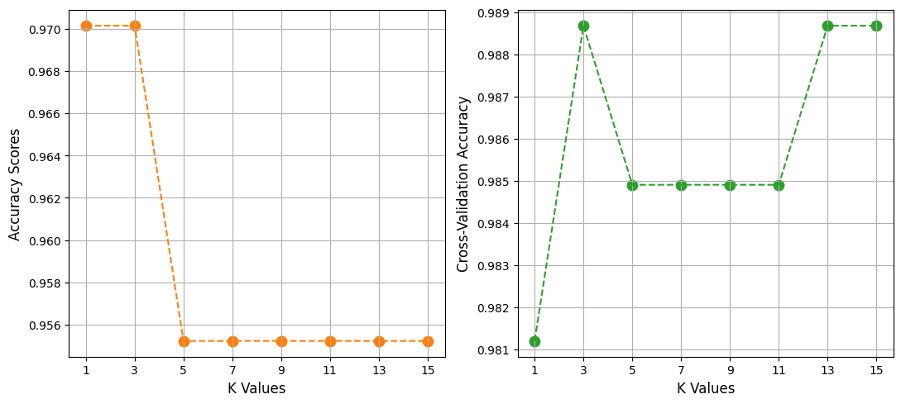
Warning
KNeighborsClassifier contains a number of important parameters to consider:
1, metric sets distance metric used
2,
n_jobsdetermines how many of computer’s cores to usebecause making a prediction requires calculating distance from a point to every single point in data, using multiple cores is highly recommended
3, algorithm sets method used to calculate nearest neighbors
while there are real differences in algorithms, by default
KNeighborsClassifierattempts to auto-select best algorithm so we often don’t need to worry about this parameter
4, by default
KNeighborsClassifierworks as we described previously, with each observation in neighborhood getting one votehowever, if we set weights parameter to distance, closer observations’ votes are weighted more than observations farther away
intuitively this make sense, since more similar neighbors might tell us more about an observation’s class than others.
5, because distance calculations treat all features as if they are on same scale, it is important to standardize features prior to using a kNN classifier.
2.6 (Optional) Predictions for multiclass classifications
Predictions for multiclass classifications
Note
In kNN, assigning a class in multiclass classification is a natural extension of binary case, and idea is same: look at k nearest training samples and let them vote.
case 1:
assume 3 classes {A, B, C}, and for k = 5, nearest neighbors’ labels [A, B, B, C, B]
predicted class = B
case 2: a classic kNN edge case or a classic tie case
with k = 5 and votes {A: 2, B: 2, C: 1}, there is no unique majority, so plain majority voting is ambiguous
kNN by itself does not define a single mandatory answer, so we must apply a tie-breaking rule
several methods to handle this tie case
Distance-weighted voting (best practice)
instead of “1 vote per neighbor”, weight each vote by distance
$w_i = \frac{1}{d_i + \epsilon}$
class $score = \sum w_i$
below table is an example
scores: A → 5.55, B → 7.00, C → 2.50
prediction is B, which is what
weights="distance"does in scikit-learncode example in below
from sklearn.neighbors import KNeighborsClassifier
knn_model = KNeighborsClassifier(
n_neighbors=5,
weights='distance', # handles ties better
metric='euclidean'
)
knn_model.fit(X_train, y_train)
knn_y_pred = knn_model.predict(X_test)
Neighbor |
Class |
Distance |
Weight |
|---|---|---|---|
1 |
A |
0.30 |
3.33 |
2 |
A |
0.45 |
2.22 |
3 |
B |
0.20 |
5.00 |
4 |
B |
0.50 |
2.00 |
5 |
C |
0.40 |
2.50 |
Choose the class of the closest neighbor
if nearest point belongs to class B → predict B
this is equivalent to:
k = 1only when there is a tiethis method is simple, deterministic, but a bit noisy
Reduce k until tie breaks
start with k=5
if tie → try k=4
if tie → try k=3
this often resolves ties naturally
less common in practice, but conceptually clean
3. Logistic Regression
3.1 What is logistic regression
Logistic Regression is a fundamental classification algorithm to predict categorical outcomes.
Despite its name, logistic regression is not a regression algorithm but a classification method that predicts probability of an instance belonging to a particular class.
For binary classification, it uses logistic (sigmoid) function to map a linear combination of input features to a probability between 0 and 1, which is then thresholded (typically at 0.5) to assign a class.
For multiclass classification, logistic regression can be extended using approaches such as one-vs-rest (OvR) or softmax regression.
In OvR, a separate binary classifier is trained for each species, treating that species as positive class (blue area) and all other species as negative class (red area).
Softmax regression generalizes logistic function to compute probabilities across all classes simultaneously, assigning each instance to class with highest predicted probability.
display(Image("../images/classification/logistic-regression-example.png", width=1240))

Figure: (Upper left) sigmoid function; (upper middle) softmax regression process: three input features to softmax regression model resulting in three output vectors where each contains predicted probabilities for three possible classes; (upper right) a bar chart of softmax outputs in which each group of bars represents predicted probability distribution over three classes; (lower subplots) three binary classifiers distinguish one class from other two classes using OvR approach.
3.2 Train a logistic regression model
from sklearn.linear_model import LogisticRegression
lr_model = LogisticRegression(random_state=123)
lr_model.fit(X_train_scaled, y_train.values.ravel())
LogisticRegression(random_state=123)In a Jupyter environment, please rerun this cell to show the HTML representation or trust the notebook.
On GitHub, the HTML representation is unable to render, please try loading this page with nbviewer.org.
Parameters
| penalty | 'l2' | |
| dual | False | |
| tol | 0.0001 | |
| C | 1.0 | |
| fit_intercept | True | |
| intercept_scaling | 1 | |
| class_weight | None | |
| random_state | 123 | |
| solver | 'lbfgs' | |
| max_iter | 100 | |
| multi_class | 'deprecated' | |
| verbose | 0 | |
| warm_start | False | |
| n_jobs | None | |
| l1_ratio | None |
3.3 Evaluating model’s performance
# predict on testing data
lr_y_pred = lr_model.predict(X_test_scaled)
# evaluate model performance
lr_score = accuracy_score(y_test, lr_y_pred)
print("Accuracy for Logistic Regression:", lr_score)
print("\nClassification Report:\n", classification_report(y_test, lr_y_pred))
Accuracy for Logistic Regression: 0.9552238805970149
Classification Report:
precision recall f1-score support
0 0.90 1.00 0.95 28
1 1.00 0.85 0.92 20
2 1.00 1.00 1.00 19
accuracy 0.96 67
macro avg 0.97 0.95 0.96 67
weighted avg 0.96 0.96 0.95 67
# compute and plot AUC-ROC plots
plot_AUC_ROC(lr_model)
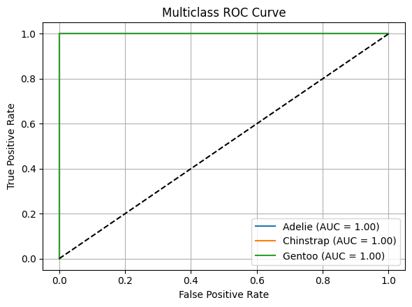
# compute and plot confusion matrix
lr_cm = confusion_matrix(y_test, lr_y_pred)
plot_confusion_matrix(lr_cm, "Confusion Matrix using Logistic Regression")

# compute and plot decision boundaries
plot_decision_boundaries(lr_model)
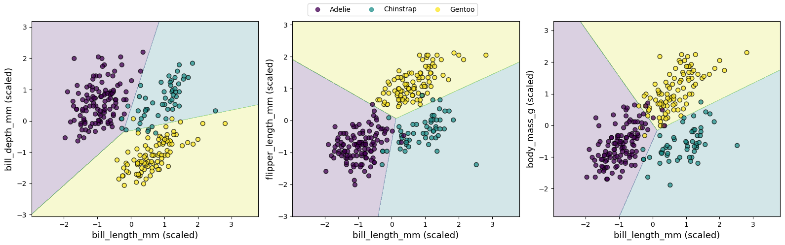
3.4 Tuning hyperparameters
# C=1.0
4. Naive Bayes
4.1 What is Naive Bayes
Naive Bayes algorithm is a simple yet powerful probabilistic classifier based on Bayes’ Theorem.
It assumes that all features are and equally important – a condition that often does not hold in practice, which can introduce some bias.
However, this independence assumption greatly simplifies computations by allowing conditional probabilities to be expressed as product of individual feature probabilities.
Given an input instance, algorithm calculates posterior probability for each class and assigns instance to class with highest probability.
Logistic Regression and Naive Bayes are both popular algorithms for classification tasks, but they differ significantly in their approach, assumptions, and underlying mechanics.
Below is an example comparing Logistic Regression and Naive Bayes decision boundaries on a synthetic dataset with two features.
Logistic Regression learns a linear decision boundary directly, whereas Naive Bayes models feature distributions for each class under independence assumption.
display(Image("../images/classification/naive-bayes-example.png", width=1024))

Figure: Logistic Regression vs. Naive Bayes model.
4.2 Training a Naive Bayes model
To apply Naive Bayes, we use GaussianNB from sklearn.naive_bayes, which assumes that features follow a Gaussian (normal) distribution – making it suitable for continuous numerical data such as bill length and body mass.
Because Naive Bayes relies on probabilities, feature scaling is not required; however, handling missing values and encoding categorical variables numerically remains necessary.
While Naive Bayes may not always match performance of more complex models like Random Forests, it offers fast training, low memory requirements, and reliable performance for simpler classification tasks.
from sklearn.naive_bayes import GaussianNB
# initialize and train Gaussian Naive Bayes classifier
gauss_nb_model = GaussianNB()
gauss_nb_model.fit(X_train_scaled, y_train.values.ravel())
GaussianNB()In a Jupyter environment, please rerun this cell to show the HTML representation or trust the notebook.
On GitHub, the HTML representation is unable to render, please try loading this page with nbviewer.org.
Parameters
| priors | None | |
| var_smoothing | 1e-09 |
4.3 Evaluating model’s performance
gauss_nb_y_pred = gauss_nb_model.predict(X_test_scaled)
gauss_nb_score = accuracy_score(y_test, gauss_nb_y_pred)
print("Accuracy for Gaussian Naive Bayes:", gauss_nb_score)
print("\nClassification Report:\n", classification_report(y_test, gauss_nb_y_pred))
Accuracy for Gaussian Naive Bayes: 0.9253731343283582
Classification Report:
precision recall f1-score support
0 0.87 0.96 0.92 28
1 0.94 0.80 0.86 20
2 1.00 1.00 1.00 19
accuracy 0.93 67
macro avg 0.94 0.92 0.93 67
weighted avg 0.93 0.93 0.92 67
# compute and plot AUC-ROC plots
plot_AUC_ROC(gauss_nb_model)

# compute and plot confusion matrix
gauss_nb_cm = confusion_matrix(y_test, gauss_nb_y_pred)
plot_confusion_matrix(gauss_nb_cm, "Confusion Matrix using Naive Bayes algorithm")
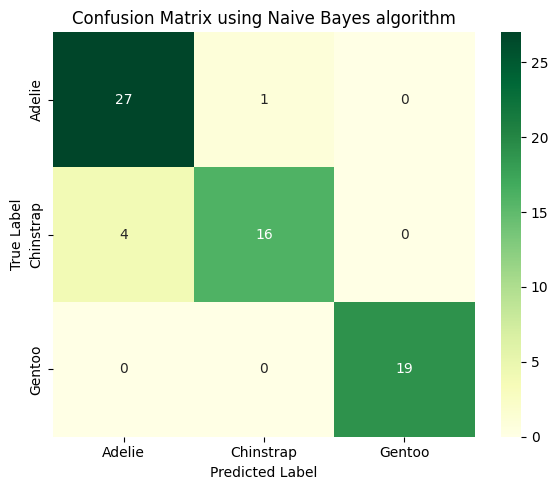
# compute and plot decision boundaries
plot_decision_boundaries(gauss_nb_model)

4.4 Logistic Regression vs Naive Bayes
Naive Bayes performs poorly on Penguins dataset, a key reason is that Naive Bayes’ assumptions are strongly violated by penguins data.
Strong feature correlation among physical measurements for penguins.
Larger penguins tend to have longer flippers AND higher body mass.
Bill length and bill depth are correlated due to morphology.
Most implementations use Gaussian Naive Bayes, which assumes Gaussian type distribution.
But penguin features are not perfectly Gaussian, may have skewness or multi-modal distributions, have different variances across species.
Tree-based models and SVMs do not require distributional assumptions, so they perform better.
Logistic Regression vs Naive Bayes
Logistic Regression is a discriminative model that directly estimates probability of a data point belonging to a particular class by fitting a linear combination of features
in context of Penguins dataset, Logistic Regression uses features such as bill length and flipper length to compute a weighted sum, which is then transformed into probabilities for penguins species
model assumes a linear relationship between features and log-odds of classes and optimizes parameters using maximum likelihood estimation
this makes Logistic Regression sensitive to feature scaling and correlations
it is generally robust to noise and can tolerate moderately correlated features, but it may struggle with highly non-linear relationships unless additional feature engineering is applied
Naive Bayes, by contrast, is a generative model that applies Bayes’ theorem to estimate probability of a class given input features, assuming conditional independence between features
for Penguins dataset, it estimates likelihood of features (e.g., bill depth) for each species and combines these with prior probabilities to predict most likely species
“naive” independence assumption often does not hold in practice (e.g., bill length and depth may be correlated), but it simplifies computation and allows Naive Bayes to be highly efficient, especially for high-dimensional data
it is less sensitive to irrelevant features and does not require feature scaling
however, it can underperform when feature dependencies are strong or when data distribution deviates from model’s assumptions (e.g., Gaussian for continuous features in Gaussian Naive Bayes)
zero probabilities must be carefully handled, typically via smoothing techniques.
Naive Bayes excels in
Text classification (Spam detection, Document topic classification, Sentiment analysis (bag-of-words))
Because features are word counts → high-dimensional, features are mostly conditionally independent, and data is very sparse.
Extremely high-dimensional, low-sample problems (genomics (gene presence/absence), malware signature detection, sensor event detection)
Real-time or resource-constrained systems (Online filtering, Edge devices, Early-stage baselines)
When probabilities matter more than accuracy, and Naive Bayes gives well-calibrated probabilities in some domains (especially text).
5. Support Vector Machine (SVM)
5.1 Intro to SVM
Logistic/Softmax Regression usually produce linear decision boundaries to separate two (multiple) classes based on their features.
A notable character is that decision boundary typically lies in region where predicted probabilities of two classes are closest – essentially where model is most uncertain.
However, when there is a large gap between two well-separated classes – as can occur when distinguishing cats from dogs based on weight and size – Logistic Regression faces an inherent limitation: an infinite number of possible solutions.
Logistic Regression algorithm has no built-in mechanism to select a single “optimal” boundary when multiple valid linear separators exist within wide margin between classes.
As a result, it may place decision boundary somewhere in gap, creating a broad, undefined region with little or no supporting data.
While this may not affect accuracy on clearly separated data, it can reduce model’s robustness when new or noisy data points appear near that boundary.
Below is an example of separating cats from dogs based on ear length and weight.
In addition to linear decision boundary produced by Logistic Regression classifier, we can identify three other linear boundaries that also achieve good separation between two classes.
A question then arises: which boundary is truly better, and how can we evaluate their performance on unseen data?
display(Image("../images/classification/svm-example-large-gap.png", width=1240))
{kind=link}
To better handle such situation, we can turn to Support Vector Machine (SVM) algorithm.
Unlike Logistic/Softmax Regression, SVM focuses on maximizing margin – distance between decision boundary and closest data points from each class, known as support vectors (as illustrated in figure below).
When a gap exists between two classes, SVM takes advantage of this space by positioning boundary near center of gap while maintaining maximum margin.
This results in a more stable and robust classifier, especially when the classes are well-separated.
Unlike Logistic Regression, which considers all data points to estimate probabilities, SVM relies primarily on most critical examples – those closest to decision boundary – making it less sensitive to outliers and more precise in defining class separations.
display(Image("../images/classification/svm-example-with-max-margin-separation.png", width=1240))

Figure: SVM classification boundary for distinguishing cats and dogs based on ear length and weight. Solid black line represents maximum margin hyperplane (decision boundary), while dashed green lines indicate positive and negative hyperplanes that define margin. Black circles highlight support vectors – critical data points that determine width of margin.
5.2 Training a SVM model
To apply SVM, we use SVC (Support Vector Classification) from sklearn.svm.
By default, it uses
rbf(Radial Basis Function) kernel, which assumes a nonlinear relationship between features.This kernel enables model to learn complex decision boundaries by implicitly mapping input features into a higher-dimensional space.
You can also experiment with other kernels, such as
linear,poly, orsigmoid, to explore different types of decision boundaries.
from sklearn.svm import SVC
svc_model = SVC(kernel='rbf', C=10.0, gamma='scale', probability=True, random_state=123)
svc_model.fit(X_train_scaled, y_train.values.ravel())
SVC(C=10.0, probability=True, random_state=123)In a Jupyter environment, please rerun this cell to show the HTML representation or trust the notebook.
On GitHub, the HTML representation is unable to render, please try loading this page with nbviewer.org.
Parameters
| C | 10.0 | |
| kernel | 'rbf' | |
| degree | 3 | |
| gamma | 'scale' | |
| coef0 | 0.0 | |
| shrinking | True | |
| probability | True | |
| tol | 0.001 | |
| cache_size | 200 | |
| class_weight | None | |
| verbose | False | |
| max_iter | -1 | |
| decision_function_shape | 'ovr' | |
| break_ties | False | |
| random_state | 123 |
5.3 Evaluating model’s performance
svc_y_pred = svc_model.predict(X_test_scaled)
svc_score = accuracy_score(y_test, svc_y_pred)
print("Accuracy for Support Vector Machine:", svc_score)
print("\nClassification Report:\n", classification_report(y_test, svc_y_pred))
Accuracy for Support Vector Machine: 0.9850746268656716
Classification Report:
precision recall f1-score support
0 0.97 1.00 0.98 28
1 1.00 0.95 0.97 20
2 1.00 1.00 1.00 19
accuracy 0.99 67
macro avg 0.99 0.98 0.99 67
weighted avg 0.99 0.99 0.99 67
# compute and plot AUC-ROC plots
plot_AUC_ROC(svc_model)
# compute and plot confusion matrix
svc_cm = confusion_matrix(y_test, svc_y_pred)
plot_confusion_matrix(svc_cm, "Confusion Matrix using Support Vector Machine")

# compute and plot decision boundaries
plot_decision_boundaries(svc_model)
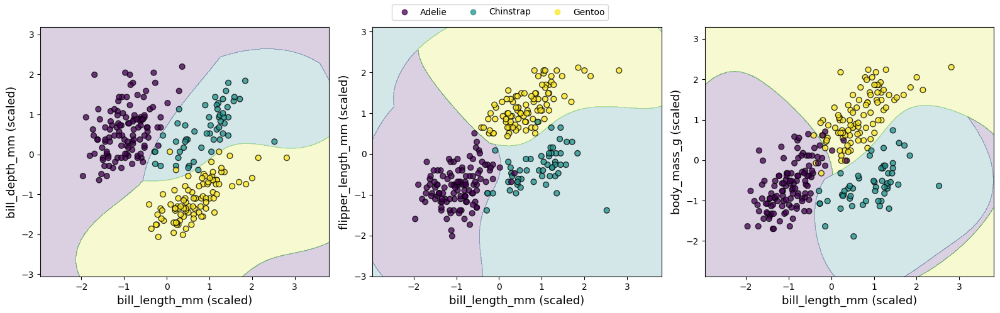
Callout
For rbf, by adjusting hyperparameters such as C (regularization strength) and gamma (kernel coefficient), we can control trade-off between margin width and classification accuracy.
Take time to tune hyperparameter
gammain SVM to observe how it affects shape of decision boundarySmall gamma values (e.g., 0.01) make each point’s influence spread out over a large area, resulting in a smoother, simpler decision boundary that may appear almost linear.
Large gamma values (e.g., 1.00) make each point’s influence very localized, allowing decision boundary to bend sharply around points and capture more complex patterns in data, but potentially leading to overfitting.
svc_model = SVC(kernel='rbf', C=10.0, gamma=0.01, random_state=123)
plot_decision_boundaries(svc_model)
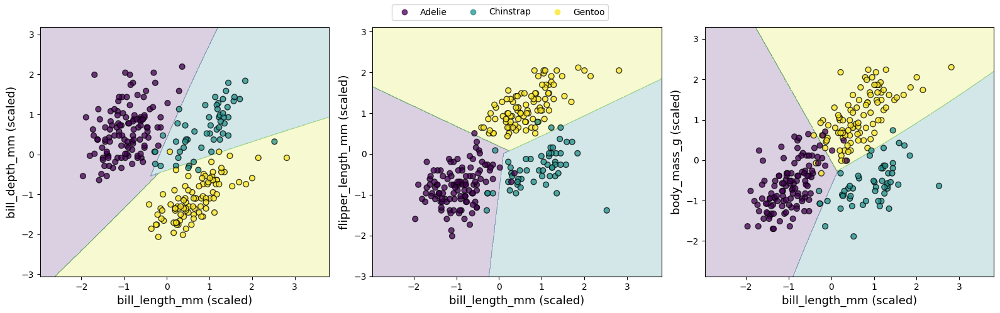
svc_model = SVC(kernel='rbf', C=10.0, gamma=10.0, random_state=123)
plot_decision_boundaries(svc_model)

svc_model = SVC(kernel='rbf', C=0.1, gamma=0.01, random_state=123)
plot_decision_boundaries(svc_model)
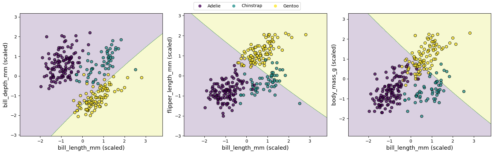
svc_model = SVC(kernel='rbf', C=0.1, gamma=10.0, random_state=123)
plot_decision_boundaries(svc_model)
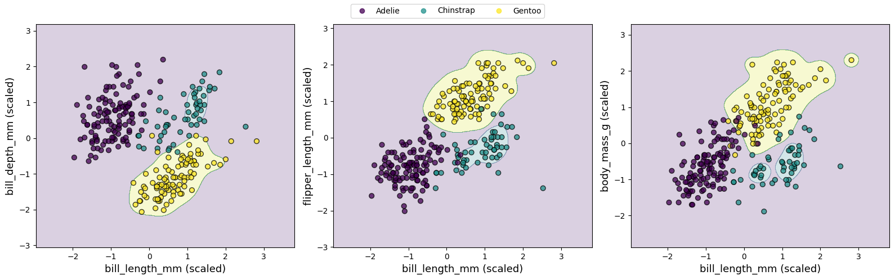
6. Tree-Based Models
6.1 Decision Tree
Decision Tree algorithm is a versatile and highly interpretable method for classification tasks.
Its core idea is to recursively split dataset into smaller subsets based on feature thresholds, creating a tree-like structure of decisions that maximizes separation of target classes.
i.e., a decision tree can be used to classify cats and dogs based on two or three features, illustrating how algorithm partitions feature space to distinguish between classes.
display(Image("../images/classification/decision-tree-example.png", width=1240))

Figure: (Upper): Decision boundary separating cats and dogs based on two features (ear length and weight), along with corresponding decision tree structure. (lower): Decision boundaries separating cats and dogs based on three features (ear length, weight, and tail length), and corresponding decision tree structure.
6.2 Train a Decision Tree model
from sklearn.tree import DecisionTreeClassifier
dt_model = DecisionTreeClassifier(max_depth=3, random_state = 123)
dt_model.fit(X_train_scaled, y_train.values.ravel())
DecisionTreeClassifier(max_depth=3, random_state=123)In a Jupyter environment, please rerun this cell to show the HTML representation or trust the notebook.
On GitHub, the HTML representation is unable to render, please try loading this page with nbviewer.org.
Parameters
| criterion | 'gini' | |
| splitter | 'best' | |
| max_depth | 3 | |
| min_samples_split | 2 | |
| min_samples_leaf | 1 | |
| min_weight_fraction_leaf | 0.0 | |
| max_features | None | |
| random_state | 123 | |
| max_leaf_nodes | None | |
| min_impurity_decrease | 0.0 | |
| class_weight | None | |
| ccp_alpha | 0.0 | |
| monotonic_cst | None |
6.3 Evaluating model’s performance
dt_y_pred = dt_model.predict(X_test_scaled)
dt_score = accuracy_score(y_test, dt_y_pred)
print("Accuracy for Decision Tree:", dt_score)
print("\nClassification Report:\n", classification_report(y_test, dt_y_pred))
Accuracy for Decision Tree: 0.9402985074626866
Classification Report:
precision recall f1-score support
0 0.90 0.96 0.93 28
1 0.94 0.85 0.89 20
2 1.00 1.00 1.00 19
accuracy 0.94 67
macro avg 0.95 0.94 0.94 67
weighted avg 0.94 0.94 0.94 67
# compute and plot AUC-ROC plots
plot_AUC_ROC(dt_model)

# compute and plot confusion matrix
dt_cm = confusion_matrix(y_test, dt_y_pred)
plot_confusion_matrix(dt_cm, "Confusion Matrix using Decision Tree algorithm")
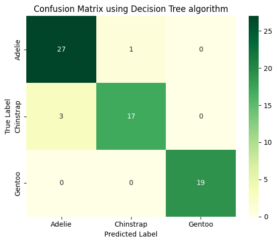
# compute and plot decision boundaries
plot_decision_boundaries(dt_model)
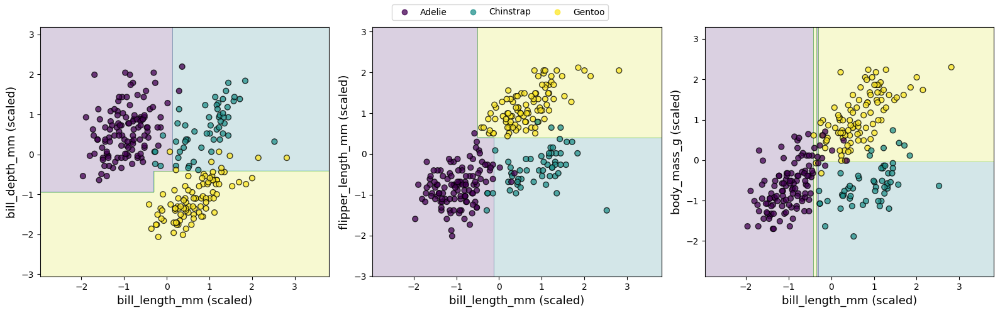
6.4 Visualization
6.4.1 Tree structures
In Decision Tree algorithm, a tree structure is a hierarchical model that represents a sequence of decisions used to make predictions.
It resembles an upside-down tree, where data flow from a root node, through internal decision nodes, to leaf nodes that produce final outputs.
Core components of a decision tree
Root node
top node of tree
represents entire dataset
splits data based on most informative feature
Internal (decision) nodes
nodes where a decision is made
each node applies a test on a feature
e.g., bill_length_mm ≤ 45.2
each test divides data into branches
Branches (edges)
outcomes of a decision rule
represent possible values or ranges of a feature
Leaf (terminal) nodes
final nodes with no further splits
output prediction
class label (classification)
numeric value (regression)
# visualize Tree structure
from sklearn.tree import plot_tree
plt.figure(figsize=(16, 6))
plot_tree(dt_model, feature_names=X.columns, filled=True, rounded=True, fontsize=10)
plt.tight_layout()
plt.show()

How to choose features for each split?
Callout
In decision trees, feature chosen at each node is one that produces best split of data according to a splitting criterion.
Goal is to select feature (and split point) that makes resulting child nodes as pure and informative as possible.
At each node, decision tree algorithm:
Considers all candidate features (or a random subset, depending on algorithm)
Evaluates possible split points for each feature
Selects feature and threshold that maximize improvement in a chosen criterion
Entropy/Information gain (classification)
Entropy = $-\sum_k p_k log_x p_k$, $x$ can be 2, e, and 10.
Information gain = reduction in entropy after a split
Used in Iterative Dichotomiser 3 algorithm (ID3)/ C4.5
Case I: a single toss of a fair coin has only two outcomes: heads and tails.
Probability that coin will land on heads is 0.5, and probability that it will land on tails is 0.5.
Entropy of coin toss is $-(0.5log_2 0.5 + 0.5log_2 0.5) = 1$
That is, only 1 bit is required to represent two equally probable outcomes, heads and tails.
Case II: two tosses of a fair coin can result in four possible outcomes: heads and heads, heads and tails, tails and heads, and tails and tails.
Probability of each outcome is 0.25.
Entropy of two tosses is equal to $-(0.25log_2 0.25 + 0.25log_2 0.25 + 0.25log_2 0.25 + 0.25log_2 0.25) = 2$
If coin has same face on both sides, variable representing its outcome has zero bits of entropy; that is, we are always certain of outcome and variable will never represent new information.
Case III: Entropy can also be represented as a fraction of a bit. i.e., an unfair coin has two different faces but is weighted such that faces are not equally likely to land in a toss.
Assume that probability that an unfair coin will land on heads is 0.8, and probability that it will land on tails is 0.2.
Entropy of a single toss of this coin is $-(0.8log_2 0.8 + 0.2log_2 0.2) = 0.72$
Outcome of a single toss of an unfair coin can have a fraction of 1 bit of entropy
There are two possible outcomes of toss, but we are not totally uncertain since one outcome is more frequent.
Gini impurity (classification)
Measures how mixed classes are in a node.
Gini = $1.0 -\sum_k p_k^2$
Lower Gini → purer node
Used by default in CART in scikit-learn
6.4.2 Feature importance
Feature importance refers to a measure of how much each input feature contributes to a model’s predictions.
It helps answer question: which features matter most for model’s decision-making process?
Feature importance is widely used to interpret models, understand data relationships, and guide feature selection.
In tree-based models such as decision trees, as well as random forests and gradient boosting that will be discussed in follow sections, feature importance is typically computed based on how much a feature reduces impurity (e.g., Gini impurity or entropy) or improves prediction accuracy across splits in tree.
Features that are frequently used for splitting and lead to large impurity reductions are considered more important.
These importance scores are often normalized so they sum to one, and provide a relative ranking, helping to identify which features most strongly influence model’s predictions.
In Decision Tree and Random Forest, impurity measures how “mixed” classes are in a given node.
A pure node contains only instances of a single class, while an impure node contains a mixture of classes.
Impurity metrics help tree decide which feature and threshold to use when splitting data to create nodes that are as pure as possible.
Gini impurity and entropy are metrics used to measure impurity of a dataset or a node.
During training, algorithm evaluates all possible splits for a feature.
It chooses split that maximizes purity, i.e., minimizes Gini impurity or maximizes information gain (reduction in entropy).
Beyond tree-based methods, feature importance can be defined in different ways depending on model and technique.
Permutation importance, i.e., measures how much model performance degrades when a feature’s values are randomly shuffled, making it model-agnostic.
In more complex models such as NNs, feature importance is often estimated using techniques like gradient-based methods, SHAP values, or attention mechanisms to quantify each feature’s influence on predictions.
Overall, feature importance improves model interpretability, helps detect irrelevant or redundant features, and supports better decision-making in ML workflows. However, importance scores should be interpreted carefully, as they can be affected by feature correlations, data distribution, and specific method used to compute them.
dt_model = DecisionTreeClassifier(max_depth=3, random_state = 123)
dt_model.fit(X_train_scaled, y_train.values.ravel())
importances = dt_model.feature_importances_
features = X.columns
plt.figure(figsize=(7, 4.5))
plt.barh(features, importances, color="tab:orange", alpha=0.75)
plt.xlabel("Feature Importance")
plt.ylabel("Features")
plt.title("Decision Tree Feature Importance")
plt.tight_layout()
plt.show()

Advantages and disadvantages of Decision Tree
Callout
Compromises associated with using decision trees are different from those of other models we have discussed.
Decision trees are easy to use, unlike many learning algorithms, decision trees do not require data to be standardized.
Decision trees can learn to ignore features that are not relevant to task, and can be used to determine which features are most useful.
Decision trees support multi-output tasks, and a single decision tree can be used for multi-class classification without employing a strategy like one versus all.
Small decision trees can be easy to interpret and visualize with scikit-learn’s
treemodule.
Like most of other models, decision trees are eager learners.
Eager learners must build an input-independent model from training data before they can be used to estimate values of test instances, but can predict relatively quickly once model has been built.
In contrast, lazy learners such as KNN algorithm defer all generalization until they must make a prediction.
Lazy learners do not spend time training, but often predict slowly compared to eager learners.
Decision trees are more prone to overfitting than many other models, as their learning algorithms can produce large, complicated decision trees that perfectly model every training instance but fail to generalize real relationship.
Several techniques can mitigate overfitting in decision trees.
Pruning is a common strategy that removes some of tallest nodes and leaves of a decision tree, but it is not currently implemented in scikit-learn.
However, similar effects can be achieved through pre-pruning by setting a maximum depth for tree, or by creating child nodes only when number of training instances they will contain exceeds a threshold.
DecisionTreeClassifierandDecisionTreeRegressorclasses provide keyword arguments for setting these constraints.Another technique for reducing overfitting is creating multiple decision trees from subsets of training data and features.
This collection of models is called an ensemble.
Efficient decision tree learning algorithms like ID3 are greedy.
They learn efficiently by making locally optimal decisions, but are not guaranteed to produce globally optimal tree.
ID3 constructs a tree by selecting a sequence of features to test.
Each feature is selected because it reduces uncertainty in node more than other variables.
It is possible, however, that locally sub-optimal tests are required in order to find globally optimal tree.
In a real application, however, tree’s growth could be limited by pruning or similar mechanisms.
Pruning trees with different shapes can produce trees with different performances.
In practice, locally optimal decisions that are guided by information gain or Gini impurity heuristics often result in acceptable decision trees.
6.5 Ensemble learning
While Decision Trees are easy to interpret and visualize, they have some notable drawbacks.
One primary issue is their tendency to overfit training data, particularly when tree is allowed to grow deep without constraints such as maximum depth or minimum samples per split.
Overfitting causes model to capture noise in training data, which can lead to poor generalization on unseen data – i.e., misclassifying a Gentoo as a Chinstrap due to overly specific splits.
Additionally, decision trees are sensitive to small variations in data.
Even slight changes, such as a few noisy measurements, can result in a significantly different tree structure, reducing model’s stability and reliability.
To address these limitations, we can use an ensemble learning, an approach that combines multiple individual models (often referred to as base/weak learners) to build a stronger, more accurate, and more robust overall model.
Idea is that by aggregating predictions of several models, ensemble can reduce errors, improve generalization, and mitigate weaknesses of individual models.
There are three main types of ensemble learning techniques:
Bagging (Bootstrap Aggregating): Multiple models are trained independently on random subsets of data, and their predictions are averaged (for regression) or voted on (for classification).
Bagging independently fits multiple models on variants of training data, which are created using a procedure called bootstrap resampling. Bootstrap resampling is a method of estimating uncertainty in a statistic.
Random Forest is a classic example of bagging applied to decision trees.
Boosting: Models are trained sequentially, with each new model focusing on errors made by previous models.
Examples include AdaBoost, Gradient Boosting, XGBoost, and LightGBM.
Stacking is an ensemble strategy that combines multiple models and uses a meta-model to learn how to best combine their predictions.
First use Random Forest, XGBoost, and SVM are the base models, and then use Logistic Regression as the meta-model to learn how to combine their predictions.
display(Image("../images/classification/ensemble-learning-randomForest-gradientBoosting.png", width=1240))

Figure: (Upper): Iillustration of Random Forest and Gradient Boosting algorithms.
display(Image("../images/classification/evolution-tree-algorithms.png", width=1240))
{kind=link}
6.5.1 Random Forest
A Random Forest builds on concept of decision trees by creating a large collection of them, each trained on a randomly selected subset of data and features.
By aggregating predictions of multiple trees, typically through majority voting for classification, Random Forest reduces overfitting, improves generalization, and mitigates the inherent instability in individual decision trees.
Figure below illustrates how a Random Forest improves upon a single Decision Tree when classifying cats and dogs based on synthetic measurements of ear length and weight.
Top row shows classification boundaries for both models.
Left: a single Decision Tree creates rigid, rectangular decision regions that precisely follow axis-aligned splits in training data.
While this achieves a good separation of training samples, jagged boundaries suggest potential overfitting to noise.
Right: Random Forest produces smoother, more nuanced decision boundaries through majority voting across 100 trees
Blended purple transition zones represent areas where individual trees disagree, demonstrating how ensemble averages out erratic predictions from any single tree.
Bottom row reveals why Random Forests are more robust by examining three constituent trees:
tree #1 prioritizes ear length for its initial split,
tree #2 begins with weight,
tree #3 uses a completely different weight threshold.
display(Image("../images/classification/random-forest-example.png", width=1240))
{kind=link}
from sklearn.ensemble import RandomForestClassifier
rf_model = RandomForestClassifier(n_estimators=100, random_state=123)
rf_model.fit(X_train_scaled, y_train.values.ravel())
rf_y_pred = rf_model.predict(X_test_scaled)
rf_score = accuracy_score(y_test, rf_y_pred)
print("Accuracy for Random Forest:", rf_score)
print("\nClassification Report:\n", classification_report(y_test, rf_y_pred))
Accuracy for Random Forest: 0.9552238805970149
Classification Report:
precision recall f1-score support
0 0.90 1.00 0.95 28
1 1.00 0.85 0.92 20
2 1.00 1.00 1.00 19
accuracy 0.96 67
macro avg 0.97 0.95 0.96 67
weighted avg 0.96 0.96 0.95 67
# compute and plot AUC-ROC plots
plot_AUC_ROC(rf_model)

# compute and plot confusion matrix
rf_cm = confusion_matrix(y_test, rf_y_pred)
plot_confusion_matrix(rf_cm, "Confusion Matrix using Random Forest algorithm")

# compute and plot decision boundaries
plot_decision_boundaries(rf_model)

# visualize tree structure
# Random forest stores its trees in `estimators_` attribute, here we access an individual tree
tree = rf_model.estimators_[0]
plt.figure(figsize=(22, 12))
plot_tree(tree, feature_names=X_train.columns,
class_names=encoder.classes_, filled=True, rounded=True, fontsize=10
)
plt.tight_layout()
plt.show()

# feature importance
rf_model = RandomForestClassifier(n_estimators=100, random_state=123)
rf_model.fit(X_train_scaled, y_train.values.ravel())
importances = rf_model.feature_importances_
features = X.columns
plt.figure(figsize=(7, 4.5))
plt.barh(features, importances, color="tab:orange", alpha=0.75)
plt.xlabel("Feature Importance")
plt.ylabel("Features")
plt.title("Random Forest Feature Importance")
plt.tight_layout()
plt.show()
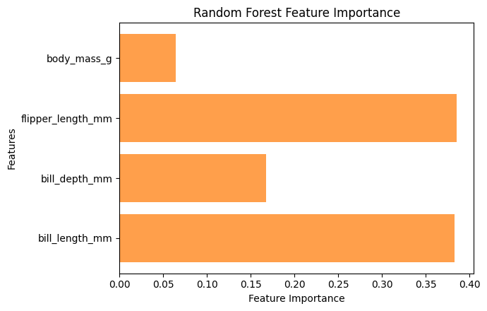
6.5.2 Gradient Boosting
Why not AdaBoosting but Gradient Boosting?
Below are structured comparison between AdaBoost and Gradient Boosting.
timeline
AdaBoost was proposed in 1996 by Yoav Freund and Robert Schapire. It was one of first practical boosting algorithms and played a major role in establishing ensemble learning as a core technique in ML.
Gradient Boosting was introduced in 2001 by Jerome H. Friedman. It generalized boosting by framing it as a gradient descent optimization problem in function space, allowing use of arbitrary differentiable loss functions and making method more flexible.
This historical progression also explains why AdaBoost is often seen as a more specialized method, while Gradient Boosting serves as foundation for modern variants such as XGBoost, LightGBM, and CatBoost.
core idea
AdaBoost: Sequential weighted voting: builds trees sequentially, each tree focuses more on misclassified samples from the previous trees; Adjusts sample weights to reduce errors; emphasizes harder-to-classify instances.
Gradient Boosting: Stage-wise additive model: builds trees sequentially, each tree tries to predict the residuals (errors) of previous trees; Minimizes a differentiable loss function (e.g., MSE, log-loss) using gradient descent.
Weak learners
AdaBoost: Typically stumps (1-level trees); Each tree predicts class; final prediction = weighted vote based on accuracy.
Gradient Boosting: Usually shallow trees (e.g., max depth 3–5); Each tree predicts residuals; final prediction = sum of weighted trees.
How they handle errors
AdaBoost: Increases weights of misclassified samples, so next tree pays more attention to them; Uses exponential loss implicitly via sample weighting.
Gradient Boosting: Fits residuals (difference between prediction and true target); Uses gradient descent on chosen loss function.
Performance & Use Cases
AdaBoost: Simple and effective for small to medium datasets; Sensitive to noisy data and outliers; Historically one of the first boosting algorithms.
Gradient Boosting: Handles complex relationships and nonlinearities well; Often more accurate than AdaBoost on large datasets; More flexible (can optimize different loss functions).
Intuition
AdaBoost: Each new tree focuses more on hard-to-classify samples and votes with a weight proportional to its accuracy.
Gradient Boosting: Each new tree tries to fix the mistakes of the ensemble by modeling the residuals.
While Random Forest provides robustness and improved accuracy over individual trees, we can further enhance performance using Gradient Boosting.
Like Random Forest, Gradient Boosting is an ensemble learning technique, but it builds a strong classifier by combining many weak learners (typically shallow decision trees) in a sequential manner.
Unlike Random Forest, which grows multiple trees independently and in parallel using random subsets of training data, Gradient Boosting constructs trees one at a time, with each new tree trained to correct errors of its predecessors.
Below apply Gradient Boosting algorithm to classify penguin species using
GradientBoostingClassifierfrom scikit-learn.
from sklearn.ensemble import GradientBoostingClassifier
gb_model = GradientBoostingClassifier(n_estimators=100, learning_rate=0.1, max_depth=3, random_state=123)
gb_model.fit(X_train_scaled, y_train.values.ravel())
gb_y_pred = gb_model.predict(X_test_scaled)
gb_score = accuracy_score(y_test, gb_y_pred)
print("Accuracy for Gradient Boosting:", gb_score)
print("\nClassification Report:\n", classification_report(y_test, gb_y_pred))
Accuracy for Gradient Boosting: 0.9552238805970149
Classification Report:
precision recall f1-score support
0 0.90 1.00 0.95 28
1 1.00 0.85 0.92 20
2 1.00 1.00 1.00 19
accuracy 0.96 67
macro avg 0.97 0.95 0.96 67
weighted avg 0.96 0.96 0.95 67
# compute and plot AUC-ROC plots
plot_AUC_ROC(gb_model)

# compute and plot confusion matrix
gb_cm = confusion_matrix(y_test, gb_y_pred)
plot_confusion_matrix(gb_cm, "Confusion Matrix using Gradient Boosting algorithm")

# compute and plot decision boundaries
plot_decision_boundaries(gb_model)

# visualize Tree structure
# Gradient Boosting algorithm stores its trees in `estimators_` attribute, here we access an individual tree
tree = gb_model.estimators_[0, 0]
plt.figure(figsize=(16, 6))
plot_tree(tree, feature_names=X_train.columns,
class_names=encoder.classes_, filled=True, rounded=True, fontsize=10
)
plt.tight_layout()
plt.show()

# feature importance
gb_model = GradientBoostingClassifier(n_estimators=100, learning_rate=0.1, max_depth=3, random_state=123)
gb_model.fit(X_train_scaled, y_train.values.ravel())
importances = gb_model.feature_importances_
features = X.columns
plt.figure(figsize=(7, 4.5))
plt.barh(features, importances, color="tab:orange", alpha=0.75)
plt.xlabel("Feature Importance")
plt.ylabel("Features")
plt.title("Gradient Boosting Feature Importance")
plt.tight_layout()
plt.show()

6.5.3 Number of base estimators in ensemble
n_estimators_range = np.arange(1, 51, 3)
rf_accuracies = []
gb_accuracies = []
for n in n_estimators_range:
rf_model = RandomForestClassifier(n_estimators=n, random_state=123)
rf_model.fit(X_train_scaled, y_train.values.ravel())
rf_accuracies.append(rf_model.score(X_test_scaled, y_test))
gb_model = GradientBoostingClassifier(n_estimators=n, learning_rate=0.1, max_depth=3, random_state=123)
gb_model.fit(X_train_scaled, y_train.values.ravel())
gb_accuracies.append(gb_model.score(X_test_scaled, y_test))
plt.figure(figsize=(6, 4.5))
plt.plot(n_estimators_range, rf_accuracies, color='tab:orange', marker='o', label='Random Forest')
plt.plot(n_estimators_range, gb_accuracies, color='tab:green', marker='s', label='Gradient Boosting')
plt.xlabel('Number of base estimators in ensemble')
plt.ylabel('Ensemble accuracy')
plt.legend()
plt.grid(True)
plt.show()

Short summary about Tree-based methods
This progression – from simplicity and interpretability of a single decision tree, to robustness and variance reduction of random forests, and finally to high precision and flexibility of gradient boosting – reflects natural evolution of tree-based methods in modern ML.
Each step addresses key limitations of previous approach, moving from simple rule-based models toward more powerful ensemble techniques.
While random forests are widely used for establishing strong baseline performance due to their stability and minimal tuning requirements, gradient boosting often delivers superior predictive accuracy on structured and tabular data.
This is particularly true in domains such as ecological and environmental measurements, where complex nonlinear relationships and feature interactions are common.
When hyperparameters such as learning rate, tree depth, and number of estimators are carefully tuned, gradient boosting models frequently achieve state-of-the-art results.
6.5.4 Stacking method
Stacking (stacked generalization) is an approach to creating ensembles; it uses a meta-estimator to combine predictions of base estimators (can be different types of base estimators).
It combines multiple different models by training a meta-model to learn how to best merge their predictions.
Instead of simply averaging or voting, stacking learns how much to trust each base model based on data.
To train a stacked ensemble, first use training set to train base estimators.
Base estimators’ predictions and ground truth are then used as training set for meta-estimator.
Meta-estimator can learn to combine base estimators’ predictions in more complex ways than voting or averaging.
Scikit-learn does not implement a stacking meta-estimator, but we can extend
BaseEstimatorclass to create our own.We use a single decision tree as meta-estimator; base estimators are a logistic regression classifier and a KNN classifier.
Meta decision tree does not see raw features. Instead, it learns decision rules based on how confident each base model is for each class.
from sklearn.ensemble import StackingClassifier
# define base estimators
base_estimators = [
('lr', LogisticRegression(max_iter=1000)),
('knn', KNeighborsClassifier(n_neighbors=5))
]
# define meta-estimator
meta_estimator = DecisionTreeClassifier(
max_depth=3,
random_state=123
)
# build stacking model
stacking_model = StackingClassifier(
estimators=base_estimators,
final_estimator=meta_estimator,
cv=5, # cross-validation to avoid data leakage
stack_method='predict_proba'
)
# train stacking ensemble
stacking_model.fit(X_train_scaled, y_train.values.ravel())
# evaluate model
#stacking_accuracy = stacking_model.score(X_test_scaled, y_test)
#print(f"Stacking model accuracy: {stacking_accuracy:.3f}")
stacking_y_pred = stacking_model.predict(X_test_scaled)
stacking_score = accuracy_score(y_test, stacking_y_pred)
print("Accuracy for Stacking model:", stacking_score)
print("\nClassification Report:\n", classification_report(y_test, stacking_y_pred))
Accuracy for Stacking model: 0.9701492537313433
Classification Report:
precision recall f1-score support
0 0.93 1.00 0.97 28
1 1.00 0.90 0.95 20
2 1.00 1.00 1.00 19
accuracy 0.97 67
macro avg 0.98 0.97 0.97 67
weighted avg 0.97 0.97 0.97 67
# compute and plot AUC-ROC plots
plot_AUC_ROC(stacking_model)
# compute and plot confusion matrix
stacking_cm = confusion_matrix(y_test, stacking_y_pred)
plot_confusion_matrix(stacking_cm, "Confusion Matrix using Stacking method")
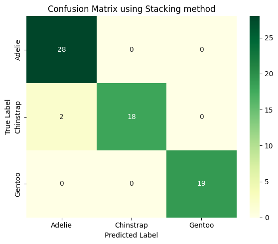
# compute and plot decision boundaries
plot_decision_boundaries(stacking_model)
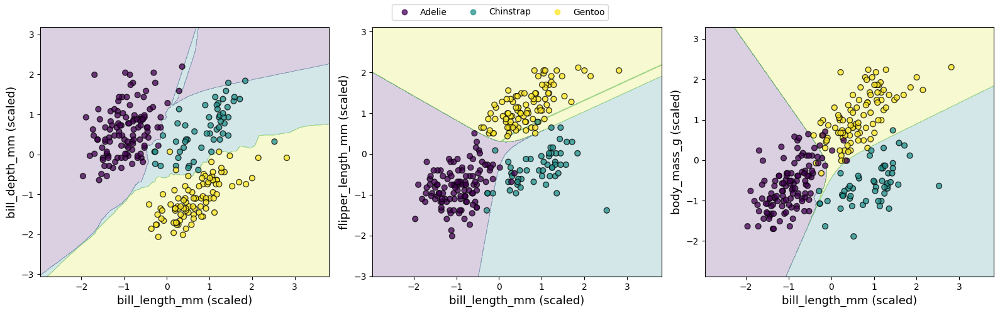
# visualize tree structure
# stacking_model.final_estimator_
# extract meta decision tree
meta_tree = stacking_model.final_estimator_
# we use
# stack_method='predict_proba'
# each base model contributes one probability per class.
# define feature names for meta-model
# in stacking, meta-model’s inputs are base models’ outputs, not original features.
class_names = encoder.classes_
meta_feature_names = []
for model_name, _ in stacking_model.estimators:
for class_name in class_names:
meta_feature_names.append(f"{model_name}_prob_{class_name}")
plt.figure(figsize=(14, 5))
plot_tree(meta_tree, feature_names=meta_feature_names,
class_names=class_names,
filled=True, rounded=True, fontsize=10
)
plt.tight_layout()
plt.show()
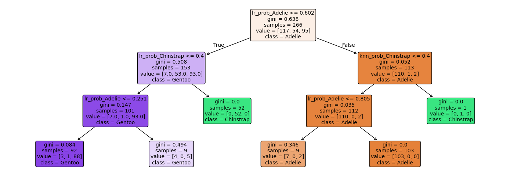
# feature importance
# for 3 classes and 2 base models, we have 2×3=6 meta-features in total
meta_tree = stacking_model.final_estimator_
importances = meta_tree.feature_importances_
feature_names = meta_feature_names # from stacking
plt.figure(figsize=(7, 4.5))
plt.barh(feature_names, importances, color="tab:orange", alpha=0.75)
plt.xlabel("Feature Importance")
plt.title('Meta-Estimator Feature Importance')
plt.gca().invert_yaxis()
plt.tight_layout()
plt.show()
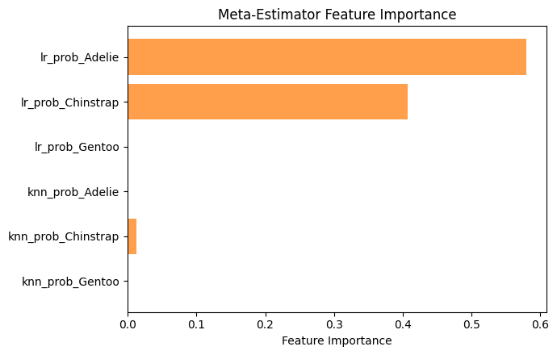
7. Neural Network Models
7.1 Multi-Layer Perceptron (simple neural networks)
A Multi-Layer Perceptron (MLP) is a type of artificial neural network (ANN) consisting of multiple layers of interconnected perceptrons (or neurons) designed to mimic certain aspects of human brain function.
Each neuron (illustrated in figure below) has following characteristics:
Input: one or more inputs (
x_1,x_2, …), e.g., features from input data expressed as floating-point numbers.Operations: Typically, each neuron conducts three main operations:
Compute weighted sum of inputs where (
w_1,w_2, …) are corresponding weights.Add a bias term to weighted sum.
Apply an activation function to result.
Output: Neuron produces a single output value.
A common equation for output of a neuron is
$Output = Activation(\sum_i (x_i * w_i) + bias)$.
display(Image("../images/classification/mlp-neuron.png", width=1240))
{kind=link}
An activation function is a mathematical transformation that converts weighted sum of a neuron’s inputs into its output signal.
By introducing non-linearity into network, activation functions enable NNs to learn complex patterns and make sophisticated decisions based on weighted inputs.
Below are some commonly used activation functions in NNs and DL models. Each plays a crucial role in introducing non-linearities, allowing network to capture intricate patterns and relationships in data.
Sigmoid: With its characteristic S-shaped curve, sigmoid function maps inputs to a smooth 0-1 range, making it historically popular for binary classification tasks.
Hyperbolic tangent (tanh): Similar to sigmoid but ranging from -1 to 1, tanh often provides stronger gradients during training.
Rectified Linear Unit (ReLU): Outputs zero for negative inputs and identity for positive inputs. ReLU has become default choice for many NN architectures due to its computational efficiency and its ability to mitigate vanishing gradient problem.
Linear: This identity function serves as a reference, showing network behavior without any non-linear transformation.
display(Image("../images/classification/activation-function.png", width=1240))

A single neuron (perceptron) can learn simple patterns but is limited in modeling complex relationships.
By combining multiple perceptrons (neurons) into layers and connecting them into a network, which is called Multi-Layer Perceptron (MLP), we create a powerful computational framework capable of approximating highly non-linear functions.
In a MLP, neurons are organized into an input layer, one or more hidden layers, and an output layer.
Image below illustrates a three-layer perceptron network with 3, 4, and 2 neurons in input, hidden, and output layers, respectively.
Input layer receives raw data, such as pixel values or measurements, and passes it to hidden layer.
Hidden layer contains multiple neurons that process information and progressively extract higher-level features. Each neuron in hidden layer is fully connected to neurons in adjacent layers, forming a dense network of weighted connections.
Output layer produces network’s predictions, whether it’s a classification, regression output, or some other tasks.
display(Image("../images/classification/mlp-network.png", width=1240))

In penguin classification task, we build a three-layer perceptron network using scikit-learn’s MLPClassifier from sklearn.neural_network.
Model is configured with:
an input layer matching number of features (6 per penguin)
a hidden layer (e.g., 16 neurons) to capture non-linear relationships
an output layer with three nodes (one per penguin class), using
reluactivation for hidden layer.
Other hyperparameters may use to construct this MLP are listed below:
adam, optimization algorithm used to update weight parameters.alpha, L2 regularization term (penalty). Setting this to 0 disables regularization, meaning model won’t penalize large weights. This may cause overfitting if dataset is small or noisy.batch_size, number of samples per mini-batch during training. Smaller batches lead to more frequent updates (finer learning) but can increase noise and training time.learning_rate, specifies learning rate schedule.“constant” means that learning rate keeps fixed throughout training.
Other options like “invscaling” or “adaptive” would adjust learning rate during training.
learning_rate_init=0.001, initial learning rate (fixed here).A smaller value means slower learning, which may require more iterations but offers more stability.
max_iter, maximum number of training iterations (epochs).n_iter_no_change=10, if validation score does not improve for 10 consecutive iterations, training will stop early.This is a form of early stopping to prevent overfitting or unnecessary computation.
random_state=123, controls random number generation for weight initialization and data shuffling, ensuring reproducible results.
from sklearn.neural_network import MLPClassifier
# solver='adam', alpha=0, batch_size=8, learning_rate='constant', learning_rate_init=0.001, n_iter_no_change=10
mlp_model = MLPClassifier(hidden_layer_sizes=(16,), activation='relu', max_iter=1000, random_state=123)
mlp_model.fit(X_train_scaled, y_train.values.ravel())
MLPClassifier(hidden_layer_sizes=(16,), max_iter=1000, random_state=123)In a Jupyter environment, please rerun this cell to show the HTML representation or trust the notebook.
On GitHub, the HTML representation is unable to render, please try loading this page with nbviewer.org.
Parameters
| hidden_layer_sizes | (16,) | |
| activation | 'relu' | |
| solver | 'adam' | |
| alpha | 0.0001 | |
| batch_size | 'auto' | |
| learning_rate | 'constant' | |
| learning_rate_init | 0.001 | |
| power_t | 0.5 | |
| max_iter | 1000 | |
| shuffle | True | |
| random_state | 123 | |
| tol | 0.0001 | |
| verbose | False | |
| warm_start | False | |
| momentum | 0.9 | |
| nesterovs_momentum | True | |
| early_stopping | False | |
| validation_fraction | 0.1 | |
| beta_1 | 0.9 | |
| beta_2 | 0.999 | |
| epsilon | 1e-08 | |
| n_iter_no_change | 10 | |
| max_fun | 15000 |
# print MLP network information
print("Number of layers (including input and output):", mlp_model.n_layers_)
print("Input layer size:", mlp_model.coefs_[0].shape[0])
print("Output layer size:", mlp_model.coefs_[-1].shape[1])
print("Hidden layer sizes:", [coef.shape[1] for coef in mlp_model.coefs_[:-1]])
Number of layers (including input and output): 3
Input layer size: 4
Output layer size: 3
Hidden layer sizes: [16]
mlp_y_pred = mlp_model.predict(X_test_scaled)
mlp_score = accuracy_score(y_test, mlp_y_pred)
print("Accuracy for Multi-Layer Perceptron:", mlp_score)
print("\nClassification Report:\n", classification_report(y_test, mlp_y_pred))
Accuracy for Multi-Layer Perceptron: 0.9701492537313433
Classification Report:
precision recall f1-score support
0 0.93 1.00 0.97 28
1 1.00 0.90 0.95 20
2 1.00 1.00 1.00 19
accuracy 0.97 67
macro avg 0.98 0.97 0.97 67
weighted avg 0.97 0.97 0.97 67
# compute and plot AUC-ROC plots
plot_AUC_ROC(mlp_model)
# compute and plot confusion matrix
mlp_cm = confusion_matrix(y_test, mlp_y_pred)
plot_confusion_matrix(mlp_cm, "Confusion Matrix using Multi-Layer Perceptron algorithm")
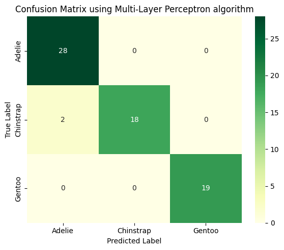
# compute and plot decision boundaries
plot_decision_boundaries(mlp_model)

7.2 Neural Networks (Keras)
MLP is a foundational NN architecture, consisting of an input layer, one or more hidden layers, and an output layer.
While MLP excels at learning complex patterns from tabular data, its shallow depth (typically 1-2 hidden layers) limits its ability to handle very high-dimensional or abstract data such as raw images, audio, or text.
To overcome these limitations, deep NN extends MLP framework by adding multiple hidden layers.
These additional layers allow model to learn highly abstract features through deep hierarchical representations: early layers might capture basic features (like edges or shapes), while deeper layers recognize complex objects or semantic patterns.
This depth enables deep NN to outperform traditional MLP in complex tasks requiring high-level feature extraction, such as CV and NLP.
NN architectures
Callout
NNs have specialized architectures designed to handle different types of data (e.g., spatial, temporal, and sequential data) and tasks more effectively.
A standard feedforward neural network (FNN) consists of stacked fully connected layers.
Convolutional neural networks (CNNs) are particularly well-suited for image data.
They use convolutional layers to automatically extract local features like edges, textures, and shapes, significantly reducing number of parameters and improving generalization on visual tasks.
Recurrent neural network (RNN) is designed for sequential data such as time series, speech, or natural language.
RNNs include loops that allow information to persist across time steps, enabling model to learn dependencies over sequences.
More advanced versions, like Long Short-Term Memory (LSTM) networks and Gated Recurrent Units (GRUs), address limitations of basic RNNs by managing long-term dependencies more effectively.
In addition to CNNs and RNNs, Transformer architecture has emerged as state-of-the-art in many language and vision tasks.
Transformers rely entirely on attention mechanisms rather than recurrence or convolutions, enabling them to model global relationships in data more efficiently.
This flexibility has made them foundation of powerful models like BERT, and GPT.
These specialized DL architectures illustrate how tailoring network design to structure of the data can lead to significant performance gains and more efficient learning.
Here, we use Keras API to construct a small DNN and apply it to penguin classification task, demonstrating how even a compact architecture can effectively distinguish between penguin species (Adelie, Chinstrap, and Gentoo).
In this tutorial, we exclude categorical features
islandandsexfrom both training and testing datasets.Target label
speciesis then encoded usingpd.get_dummies()function in Pandas.Afterward, we split data into training and testing sets and standardize feature values to ensure consistent scaling during model training.
from tensorflow import keras
# load dataset
penguins = sns.load_dataset('penguins')
# remove missing values and outliers
penguins_classification = penguins.dropna()
X = penguins_classification[['bill_length_mm', 'bill_depth_mm', 'flipper_length_mm', 'body_mass_g']].copy()
#y = penguins_classification['species'].astype('int')
y = penguins_classification[['species']].copy()
# encoding categorical variables using `get_dummies`
y = pd.get_dummies(penguins_classification['species']).astype(np.int8)
y.columns = ['Adelie', 'Chinstrap', 'Gentoo']
X_train, X_test, y_train, y_test = train_test_split(X, y, test_size=0.2, random_state=123)
print(f"Number of examples for training is {len(X_train)} and test is {len(X_test)}")
# standardize features
scaler = StandardScaler()
X_train_scaled = scaler.fit_transform(X_train)
X_test_scaled = scaler.transform(X_test)
Number of examples for training is 266 and test is 67
When building a DNN with Keras, there are two common approaches: using Sequential() API step by step, or defining all layers at once within Sequential() constructor.
Here, we adopt first approach, whereas second approach is used in Jupyter notebook to construct same DNN.
We start by creating an empty model with
keras.Sequential(), which initializes a linear container for stacking sequential layers.Next, we define each layer separately using
Denseclass, specifying number of neurons and activation function for each layer.Finally, we add all layers using
keras.Model()to sequential container, resulting in a trainable model.from tensorflow.keras.layers import Dense, Dropout dnn_model = Sequential() input_layer = keras.Input(shape=(X_train_scaled.shape[1],)) # 4 input features hidden_layer1 = Dense(32, activation="relu")(input_layer) # hidden_layer1 = Dropout(0.2)(hidden_layer1) hidden_layer2 = Dense(16, activation="relu")(hidden_layer1) hidden_layer3 = Dense(8, activation="relu")(hidden_layer2) output_layer = Dense(3, activation="softmax")(hidden_layer3) # 3 classes dnn_model = keras.Model(inputs=input_layer, outputs=output_layer)
keras.layers.Dropout()is a regularization technique in Keras used to reduce overfitting by randomly setting a fraction of input units to zero during training.Dropout(0.2)means that 20% of outputs of a specific layer will be randomly set to zero in each training step.
## construct neuron network using `Sequential()` constructor
from tensorflow.keras.layers import Dense, Dropout
dnn_model = keras.Sequential([
keras.Input(shape=(X_train_scaled.shape[1],)), # input layer: 4 input features
Dense(16, activation="relu"), # three hidden layers
Dense(8, activation="relu"),
Dense(4, activation="relu"),
Dense(3, activation="softmax") # output layer: 3 classes
])
# print a concise summary of a NN’s architecture
dnn_model.summary()
Model: "sequential"
┏━━━━━━━━━━━━━━━━━━━━━━━━━━━━━━━━━┳━━━━━━━━━━━━━━━━━━━━━━━━┳━━━━━━━━━━━━━━━┓ ┃ Layer (type) ┃ Output Shape ┃ Param # ┃ ┡━━━━━━━━━━━━━━━━━━━━━━━━━━━━━━━━━╇━━━━━━━━━━━━━━━━━━━━━━━━╇━━━━━━━━━━━━━━━┩ │ dense (Dense) │ (None, 16) │ 80 │ ├─────────────────────────────────┼────────────────────────┼───────────────┤ │ dense_1 (Dense) │ (None, 8) │ 136 │ ├─────────────────────────────────┼────────────────────────┼───────────────┤ │ dense_2 (Dense) │ (None, 4) │ 36 │ ├─────────────────────────────────┼────────────────────────┼───────────────┤ │ dense_3 (Dense) │ (None, 3) │ 15 │ └─────────────────────────────────┴────────────────────────┴───────────────┘
Total params: 267 (1.04 KB)
Trainable params: 267 (1.04 KB)
Non-trainable params: 0 (0.00 B)
Now that we have designed a DNN that, in theory, should be capable of classifying penguins, we need to specify two critical components before training: (1) a loss function to quantify prediction errors, and (2) an optimizer to adjust the model’s weights during training.
Loss function: For multi-class classification, we select categorical cross-entropy, which penalizes incorrect probabilistic predictions.
In Keras, this is implemented via
keras.losses.CategoricalCrossentropyclass.This loss function works naturally with
softmaxactivation function we applied in output layer.
Optimizer determines how efficiently model converges during training.
Keras provides many options, each with its advantages, but here we use widely adopted
Adam(adaptive moment estimation) optimizer.Adam has several parameters, and default values generally perform well, so we will use it with its defaults.
We use
model.compile()to combine chosen loss function and optimier before starting training.One training epoch means that every sample in training data has been shown to NN once and used to update its parameters.
During training, we set
batch_size=16to balance memory efficiency with gradient stability, andverbose=1to display a progress bar showing loss and metrics for each epoch in real time..fit()method returns a history object, which contains a history attribute holding training loss and other metrics for each epoch.
# compile DNN model
from keras.optimizers import Adam
dnn_model.compile(optimizer='adam', loss=keras.losses.CategoricalCrossentropy())
# train DNN model
history = dnn_model.fit(X_train_scaled, y_train, batch_size=16, epochs=100, verbose=1)
Epoch 1/100
17/17 ━━━━━━━━━━━━━━━━━━━━ 1s 2ms/step - loss: 1.0613
Epoch 2/100
17/17 ━━━━━━━━━━━━━━━━━━━━ 0s 2ms/step - loss: 0.9475
Epoch 3/100
17/17 ━━━━━━━━━━━━━━━━━━━━ 0s 2ms/step - loss: 0.8400
Epoch 4/100
17/17 ━━━━━━━━━━━━━━━━━━━━ 0s 2ms/step - loss: 0.7255
Epoch 5/100
17/17 ━━━━━━━━━━━━━━━━━━━━ 0s 2ms/step - loss: 0.6120
Epoch 6/100
17/17 ━━━━━━━━━━━━━━━━━━━━ 0s 2ms/step - loss: 0.5206
Epoch 7/100
17/17 ━━━━━━━━━━━━━━━━━━━━ 0s 2ms/step - loss: 0.4531
Epoch 8/100
17/17 ━━━━━━━━━━━━━━━━━━━━ 0s 2ms/step - loss: 0.4068
Epoch 9/100
17/17 ━━━━━━━━━━━━━━━━━━━━ 0s 2ms/step - loss: 0.3728
Epoch 10/100
17/17 ━━━━━━━━━━━━━━━━━━━━ 0s 2ms/step - loss: 0.3471
Epoch 11/100
17/17 ━━━━━━━━━━━━━━━━━━━━ 0s 2ms/step - loss: 0.3277
Epoch 12/100
17/17 ━━━━━━━━━━━━━━━━━━━━ 0s 2ms/step - loss: 0.3117
Epoch 13/100
17/17 ━━━━━━━━━━━━━━━━━━━━ 0s 2ms/step - loss: 0.2982
Epoch 14/100
17/17 ━━━━━━━━━━━━━━━━━━━━ 0s 2ms/step - loss: 0.2833
Epoch 15/100
17/17 ━━━━━━━━━━━━━━━━━━━━ 0s 2ms/step - loss: 0.2703
Epoch 16/100
17/17 ━━━━━━━━━━━━━━━━━━━━ 0s 2ms/step - loss: 0.2575
Epoch 17/100
17/17 ━━━━━━━━━━━━━━━━━━━━ 0s 2ms/step - loss: 0.2452
Epoch 18/100
17/17 ━━━━━━━━━━━━━━━━━━━━ 0s 2ms/step - loss: 0.2329
Epoch 19/100
17/17 ━━━━━━━━━━━━━━━━━━━━ 0s 2ms/step - loss: 0.2197
Epoch 20/100
17/17 ━━━━━━━━━━━━━━━━━━━━ 0s 2ms/step - loss: 0.2072
Epoch 21/100
17/17 ━━━━━━━━━━━━━━━━━━━━ 0s 2ms/step - loss: 0.1934
Epoch 22/100
17/17 ━━━━━━━━━━━━━━━━━━━━ 0s 2ms/step - loss: 0.1797
Epoch 23/100
17/17 ━━━━━━━━━━━━━━━━━━━━ 0s 2ms/step - loss: 0.1637
Epoch 24/100
17/17 ━━━━━━━━━━━━━━━━━━━━ 0s 2ms/step - loss: 0.1489
Epoch 25/100
17/17 ━━━━━━━━━━━━━━━━━━━━ 0s 3ms/step - loss: 0.1319
Epoch 26/100
17/17 ━━━━━━━━━━━━━━━━━━━━ 0s 2ms/step - loss: 0.1180
Epoch 27/100
17/17 ━━━━━━━━━━━━━━━━━━━━ 0s 2ms/step - loss: 0.1028
Epoch 28/100
17/17 ━━━━━━━━━━━━━━━━━━━━ 0s 2ms/step - loss: 0.0903
Epoch 29/100
17/17 ━━━━━━━━━━━━━━━━━━━━ 0s 2ms/step - loss: 0.0811
Epoch 30/100
17/17 ━━━━━━━━━━━━━━━━━━━━ 0s 2ms/step - loss: 0.0717
Epoch 31/100
17/17 ━━━━━━━━━━━━━━━━━━━━ 0s 2ms/step - loss: 0.0637
Epoch 32/100
17/17 ━━━━━━━━━━━━━━━━━━━━ 0s 2ms/step - loss: 0.0599
Epoch 33/100
17/17 ━━━━━━━━━━━━━━━━━━━━ 0s 2ms/step - loss: 0.0541
Epoch 34/100
17/17 ━━━━━━━━━━━━━━━━━━━━ 0s 2ms/step - loss: 0.0499
Epoch 35/100
17/17 ━━━━━━━━━━━━━━━━━━━━ 0s 2ms/step - loss: 0.0476
Epoch 36/100
17/17 ━━━━━━━━━━━━━━━━━━━━ 0s 2ms/step - loss: 0.0438
Epoch 37/100
17/17 ━━━━━━━━━━━━━━━━━━━━ 0s 2ms/step - loss: 0.0420
Epoch 38/100
17/17 ━━━━━━━━━━━━━━━━━━━━ 0s 2ms/step - loss: 0.0406
Epoch 39/100
17/17 ━━━━━━━━━━━━━━━━━━━━ 0s 2ms/step - loss: 0.0393
Epoch 40/100
17/17 ━━━━━━━━━━━━━━━━━━━━ 0s 2ms/step - loss: 0.0371
Epoch 41/100
17/17 ━━━━━━━━━━━━━━━━━━━━ 0s 2ms/step - loss: 0.0361
Epoch 42/100
17/17 ━━━━━━━━━━━━━━━━━━━━ 0s 2ms/step - loss: 0.0344
Epoch 43/100
17/17 ━━━━━━━━━━━━━━━━━━━━ 0s 2ms/step - loss: 0.0343
Epoch 44/100
17/17 ━━━━━━━━━━━━━━━━━━━━ 0s 2ms/step - loss: 0.0327
Epoch 45/100
17/17 ━━━━━━━━━━━━━━━━━━━━ 0s 2ms/step - loss: 0.0329
Epoch 46/100
17/17 ━━━━━━━━━━━━━━━━━━━━ 0s 2ms/step - loss: 0.0310
Epoch 47/100
17/17 ━━━━━━━━━━━━━━━━━━━━ 0s 2ms/step - loss: 0.0310
Epoch 48/100
17/17 ━━━━━━━━━━━━━━━━━━━━ 0s 2ms/step - loss: 0.0294
Epoch 49/100
17/17 ━━━━━━━━━━━━━━━━━━━━ 0s 2ms/step - loss: 0.0292
Epoch 50/100
17/17 ━━━━━━━━━━━━━━━━━━━━ 0s 2ms/step - loss: 0.0282
Epoch 51/100
17/17 ━━━━━━━━━━━━━━━━━━━━ 0s 2ms/step - loss: 0.0280
Epoch 52/100
17/17 ━━━━━━━━━━━━━━━━━━━━ 0s 2ms/step - loss: 0.0269
Epoch 53/100
17/17 ━━━━━━━━━━━━━━━━━━━━ 0s 2ms/step - loss: 0.0268
Epoch 54/100
17/17 ━━━━━━━━━━━━━━━━━━━━ 0s 3ms/step - loss: 0.0262
Epoch 55/100
17/17 ━━━━━━━━━━━━━━━━━━━━ 0s 2ms/step - loss: 0.0256
Epoch 56/100
17/17 ━━━━━━━━━━━━━━━━━━━━ 0s 2ms/step - loss: 0.0244
Epoch 57/100
17/17 ━━━━━━━━━━━━━━━━━━━━ 0s 2ms/step - loss: 0.0242
Epoch 58/100
17/17 ━━━━━━━━━━━━━━━━━━━━ 0s 2ms/step - loss: 0.0237
Epoch 59/100
17/17 ━━━━━━━━━━━━━━━━━━━━ 0s 2ms/step - loss: 0.0229
Epoch 60/100
17/17 ━━━━━━━━━━━━━━━━━━━━ 0s 2ms/step - loss: 0.0224
Epoch 61/100
17/17 ━━━━━━━━━━━━━━━━━━━━ 0s 2ms/step - loss: 0.0214
Epoch 62/100
17/17 ━━━━━━━━━━━━━━━━━━━━ 0s 2ms/step - loss: 0.0212
Epoch 63/100
17/17 ━━━━━━━━━━━━━━━━━━━━ 0s 2ms/step - loss: 0.0208
Epoch 64/100
17/17 ━━━━━━━━━━━━━━━━━━━━ 0s 2ms/step - loss: 0.0197
Epoch 65/100
17/17 ━━━━━━━━━━━━━━━━━━━━ 0s 2ms/step - loss: 0.0193
Epoch 66/100
17/17 ━━━━━━━━━━━━━━━━━━━━ 0s 2ms/step - loss: 0.0187
Epoch 67/100
17/17 ━━━━━━━━━━━━━━━━━━━━ 0s 2ms/step - loss: 0.0183
Epoch 68/100
17/17 ━━━━━━━━━━━━━━━━━━━━ 0s 2ms/step - loss: 0.0186
Epoch 69/100
17/17 ━━━━━━━━━━━━━━━━━━━━ 0s 2ms/step - loss: 0.0194
Epoch 70/100
17/17 ━━━━━━━━━━━━━━━━━━━━ 0s 2ms/step - loss: 0.0173
Epoch 71/100
17/17 ━━━━━━━━━━━━━━━━━━━━ 0s 2ms/step - loss: 0.0166
Epoch 72/100
17/17 ━━━━━━━━━━━━━━━━━━━━ 0s 2ms/step - loss: 0.0163
Epoch 73/100
17/17 ━━━━━━━━━━━━━━━━━━━━ 0s 2ms/step - loss: 0.0162
Epoch 74/100
17/17 ━━━━━━━━━━━━━━━━━━━━ 0s 2ms/step - loss: 0.0156
Epoch 75/100
17/17 ━━━━━━━━━━━━━━━━━━━━ 0s 2ms/step - loss: 0.0154
Epoch 76/100
17/17 ━━━━━━━━━━━━━━━━━━━━ 0s 2ms/step - loss: 0.0149
Epoch 77/100
17/17 ━━━━━━━━━━━━━━━━━━━━ 0s 2ms/step - loss: 0.0149
Epoch 78/100
17/17 ━━━━━━━━━━━━━━━━━━━━ 0s 2ms/step - loss: 0.0146
Epoch 79/100
17/17 ━━━━━━━━━━━━━━━━━━━━ 0s 2ms/step - loss: 0.0141
Epoch 80/100
17/17 ━━━━━━━━━━━━━━━━━━━━ 0s 2ms/step - loss: 0.0139
Epoch 81/100
17/17 ━━━━━━━━━━━━━━━━━━━━ 0s 2ms/step - loss: 0.0140
Epoch 82/100
17/17 ━━━━━━━━━━━━━━━━━━━━ 0s 2ms/step - loss: 0.0132
Epoch 83/100
17/17 ━━━━━━━━━━━━━━━━━━━━ 0s 2ms/step - loss: 0.0136
Epoch 84/100
17/17 ━━━━━━━━━━━━━━━━━━━━ 0s 2ms/step - loss: 0.0129
Epoch 85/100
17/17 ━━━━━━━━━━━━━━━━━━━━ 0s 2ms/step - loss: 0.0137
Epoch 86/100
17/17 ━━━━━━━━━━━━━━━━━━━━ 0s 2ms/step - loss: 0.0128
Epoch 87/100
17/17 ━━━━━━━━━━━━━━━━━━━━ 0s 2ms/step - loss: 0.0121
Epoch 88/100
17/17 ━━━━━━━━━━━━━━━━━━━━ 0s 2ms/step - loss: 0.0128
Epoch 89/100
17/17 ━━━━━━━━━━━━━━━━━━━━ 0s 2ms/step - loss: 0.0122
Epoch 90/100
17/17 ━━━━━━━━━━━━━━━━━━━━ 0s 2ms/step - loss: 0.0117
Epoch 91/100
17/17 ━━━━━━━━━━━━━━━━━━━━ 0s 2ms/step - loss: 0.0116
Epoch 92/100
17/17 ━━━━━━━━━━━━━━━━━━━━ 0s 2ms/step - loss: 0.0115
Epoch 93/100
17/17 ━━━━━━━━━━━━━━━━━━━━ 0s 2ms/step - loss: 0.0112
Epoch 94/100
17/17 ━━━━━━━━━━━━━━━━━━━━ 0s 2ms/step - loss: 0.0112
Epoch 95/100
17/17 ━━━━━━━━━━━━━━━━━━━━ 0s 2ms/step - loss: 0.0112
Epoch 96/100
17/17 ━━━━━━━━━━━━━━━━━━━━ 0s 2ms/step - loss: 0.0109
Epoch 97/100
17/17 ━━━━━━━━━━━━━━━━━━━━ 0s 2ms/step - loss: 0.0105
Epoch 98/100
17/17 ━━━━━━━━━━━━━━━━━━━━ 0s 2ms/step - loss: 0.0107
Epoch 99/100
17/17 ━━━━━━━━━━━━━━━━━━━━ 0s 2ms/step - loss: 0.0104
Epoch 100/100
17/17 ━━━━━━━━━━━━━━━━━━━━ 0s 2ms/step - loss: 0.0103
plt.figure(figsize=(6, 4.5))
sns.lineplot(x=history.epoch, y=history.history['loss'], c="tab:orange", alpha=0.75, label='Training Loss')
plt.xlabel("Epoch")
plt.ylabel("Training Loss")
plt.tight_layout()
plt.show()

# predict class probabilities
dnn_y_pred_probs = dnn_model.predict(X_test_scaled)
# convert probabilities to class labels
dnn_y_pred = np.argmax(dnn_y_pred_probs, axis=1)
y_true = np.argmax(y_test, axis=1)
dnn_score = accuracy_score(y_true, dnn_y_pred)
print("Accuracy for Deep Neutron Network:", dnn_score)
print("\nClassification Report:\n", classification_report(y_true, dnn_y_pred))
3/3 ━━━━━━━━━━━━━━━━━━━━ 0s 20ms/step
Accuracy for Deep Neutron Network: 0.9850746268656716
Classification Report:
precision recall f1-score support
0 0.97 1.00 0.98 28
1 1.00 0.95 0.97 20
2 1.00 1.00 1.00 19
accuracy 0.99 67
macro avg 0.99 0.98 0.99 67
weighted avg 0.99 0.99 0.99 67
# compute and plot AUC-ROC plots
# AttributeError: 'Sequential' object has no attribute 'predict_proba'
# plot_AUC_ROC(dnn_model)
# compute and plot confusion matrix
dnn_cm = confusion_matrix(y_true, dnn_y_pred)
plot_confusion_matrix(dnn_cm, "Confusion Matrix using Deep Neural Network algorithm")
# compute and plot decision boundaries
# plot_decision_boundaries(dnn_model)
8. Model Evaluations
8.1 Comparison of Trained Models
To evaluate performance of different algorithms in classifying penguin species, we compare their accuracy scores and confusion matrices.
Algorithms we adopted in this episode include:
Instance-based: k-Nearest Neighbors.
Probability-based: Logistic Regression, and Naive Bayes.
Hyperplane-based: Support Vector Machine.
Tree-based methods: Decision Tree.
Network-based models: Multi-Layer Perceptron (MLP).
Each model was trained on same training set and evaluated on a common testing set, with consistent preprocessing applied across all methods.
scores = {'Multi-Layer Perceptron': mlp_score,
'Decision Tree': dt_score,
'Support Vector Machine': svc_score,
'Naive Bayes': gauss_nb_score,
'Logistic Regression': lr_score,
'k-Nearest Neighbors': knn_score}
# convert to lists for plotting
model_names = list(scores.keys())
accuracy_scores = list(scores.values())
plt.figure(figsize=(8, 5))
plt.barh(model_names, accuracy_scores, color='tab:green', alpha=0.75)
plt.xlabel('Accuracy scores')
plt.title('ML Model Accuracy Comparison')
plt.xlim(0.85, 1.02)
plt.xticks(np.arange(0.85, 1.03, 0.05))
# annotate bars
for i, score in enumerate(accuracy_scores):
plt.text(score + 0.006, i, f'{score:.2f}', va='center')
plt.tight_layout()
plt.show()
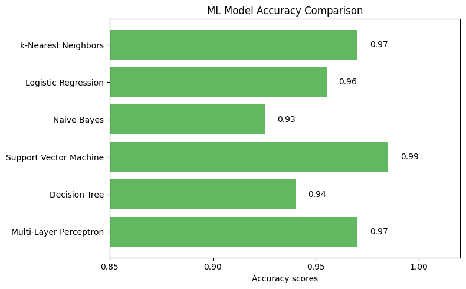
Performance under current training settings:
SVM achieved highest accuracy, demonstrating its effectiveness in capturing complex patterns and feature interactions in the Penguins dataset.
Naive Bayes showed slightly lower accuracy, likely due to its strong independence assumption between features, which does not fully hold in this dataset.
Other algorithms provided moderate performance.
# generate sample data for 6 heatmaps
fig, axs = plt.subplots(2, 3, figsize=(10, 6))
axs = axs.flatten()
heatmaps = []
vmin = min(map(np.min, [knn_cm, lr_cm, gauss_nb_cm, svc_cm, dt_cm, mlp_cm]))
vmax = max(map(np.max, [knn_cm, lr_cm, gauss_nb_cm, svc_cm, dt_cm, mlp_cm]))
subtitle = ["k-Nearest Neighbors", "Logistic Regression", "Gaussian Naive Bayes",
"Support Vector Machine", "Decision Tree", "Multi-Layer Perceptron"]
for i, data in enumerate([knn_cm, lr_cm, gauss_nb_cm, svc_cm, dt_cm, mlp_cm]):
hm = sns.heatmap(data, annot=True, ax=axs[i], cmap='YlGn', cbar=False, vmin=vmin, vmax=vmax,
xticklabels=["Adelie", "Chinstrap", "Gentoo"], yticklabels=['Adelie', 'Chinstrap', 'Gentoo'])
axs[i].set_title(subtitle[i])
heatmaps.append(hm)
# position for a univresal colorbar: [left, bottom, width, height] in figure coordinates
cbar_ax = fig.add_axes([0.92, 0.05, 0.03, 0.86])
plt.colorbar(heatmaps[0].collections[0], cax=cbar_ax)
plt.tight_layout(rect=[0, 0, 0.92, 1])
plt.show()
C:\Users\wangy\AppData\Local\Temp\ipykernel_41612\744061234.py:23: UserWarning: This figure includes Axes that are not compatible with tight_layout, so results might be incorrect.
plt.tight_layout(rect=[0, 0, 0.92, 1])

Confusion matrices provided deeper insight into class-level prediction performance:
SVM demonstrated well-balanced performance across all three penguin species.
Naive Bayes, in contrast, confused Adelie and Chinstrap penguins, likely due to overlapping feature distributions between these species.
Other algorithms had a limited number of misclassifications, primarily between Adelie and Chinstrap..
8.2 Guidelines for models selection
For classification tasks, we experimented with a variety of models, including k-Nearest Neighbors (k-NN), probability-based models (Logistic Regression, Naive Bayes), margin-based models (SVM), tree-based models (Decision Tree, Random Forest, Gradient Boosting), and neural networks (MLPs/NNs). Choosing most suitable model depends on multiple factors, including dataset size, feature characteristics, interpretability, and computational resources.
k-Nearest Neighbors (k-NN)
Works well on small datasets and when class boundaries are relatively simple.
Sensitive to high-dimensional data due to the curse of dimensionality.
Requires feature scaling for distance-based calculations.
Simple to implement but computationally expensive for large datasets.
Probability-based models (Logistic Regression, Naive Bayes)
Logistic Regression is interpretable and works well when classes are linearly separable.
Naive Bayes is efficient for text or categorical features but assumes feature independence, which may not hold in many datasets.
Both models are lightweight and fast to train.
Margin-based models (SVM)
Effective in high-dimensional feature spaces and when a clear decision boundary exists.
Can handle non-linear boundaries using kernel tricks.
Computationally intensive for large datasets and requires careful hyperparameter tuning.
Tree-based models (Decision Tree, Random Forest, Gradient Boosting)
Decision Trees are easy to interpret but prone to overfitting.
Random Forests reduce variance by averaging multiple trees, improving robustness.
Gradient Boosting models often achieve state-of-the-art accuracy on structured tabular data by sequentially learning residual errors, but they require careful hyperparameter tuning.
Tree-based models are scale-invariant and handle both numerical and categorical features naturally.
Neural Networks (MLPs/NNs)
Capable of learning complex, non-linear patterns.
Require larger datasets and feature scaling for effective training.
Less interpretable compared to tree-based models.
Computationally more intensive, often benefiting from GPU acceleration.
Practical Recommendation:
For small, simple datasets, k-NN, Logistic Regression, or SVM can provide quick baselines.
For structured tabular data, Random Forests or Gradient Boosting classifiers are generally preferred due to their robustness, strong accuracy, and some interpretability.
Neural Networks are more appropriate when the dataset is large or the relationships between features and classes are highly non-linear.
In general, tree-based ensembles like Random Forests and Gradient Boosting offer the best balance between accuracy, robustness, and usability for most practical classification tasks.